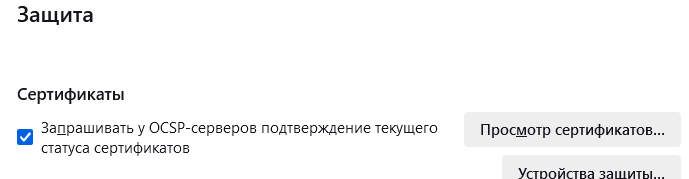

Давайте сразу проясним несколько важных моментов:
Сборка не содержит исполняемых файлов кроме unzip-а, она их скачивает непосредственно с гитхаба автора zapret - все свои претензии “про вирусы” можете направлять непосредственно автору zapret. Но куда вас при этом пошлют, я себе примерно представляю. Боитесь вирусов/банов в онлайн играх и т.п. - не используйте Zapret (и его компонент - драйвер WinDivert), это не для вас. Есть более другие решения - форум в помощь. Нечего засирать тему подобным мусором. Просто проходим мимо.
Нет, эта программа, как и GDPI, не поможет обойти блокировку на забугорных сайтах по геолокации.
Нет, я не буду переписывать конфиги отсюда под гудбай, байдипиай, роутеры, линуксы, макоси и пр. Вам надо - вы и переписывайте, я не против.
Это тема не для обучения вас пользованию запретом, для этого есть тема обсуждения zapret-а. Там свои вопросы типа между чем и чем вставлять стратегию из гуд/блокчека и задавайте.
И не надо писать посты типа "Вот есть cmd (вываливается весь cmd в пост), как мне тут подкрутить, чтобы работал сайт xxx.xxx/дикрорд/ютуб?
Достаточно спросить: Не работает сайт xxx.xxx, версия сборки такая-то, что делать? Можно даже в личку, отвечу профессионально, как автор сборки, знающий ее досконально.
Инструкция по использованию:
- Скачать, распаковать в любую папку. Запустить
!!!get_zapret_first!!!.cmdон скачает нужные файлы с гитхаба автора zapret - можно пользоваться. Для ускорения скачивания на виндовс не имеющих встроенного curl-а (ниже 10-ки) можно взять оный например из Гудчека и закинуть нужные файлы (exe, crt и dll) в Windows\System32, в хозяйстве всяко пригодится
- В папке GoodbyeDPI (или в папке Быстро если обновляетесь) выполнить от админа
service_remove.cmdво избежание различных проблем с драйвером сетевых пакетов WinDivert (да, его службу этот cmd тоже останавливает и удаляет, он не только для службы запрета/гудбая!) - Пользователям Windows 7, 8 и 8.1 x64 - используйте драйвер WinDivert (2 файла - dll и sys) из папки x86_64 гудбая, заменив имеющиеся здесь, иначе может ругаться и просить цифровую подпись. Не забудьте запустить от админа
service_remove.cmdперед заменой файлов! Или запустите!!!Win7-8_Change_Windivert!!!.cmdпосле скачивания файлов zapret - скрипт все сделает сам - Запустить
1_preset_russia.cmdдля использования с окошком или 2_install_reinstall_service.cmd (от админа!) для установки как службы. Или вариант_zlесли хотите настройки как в zapret launcher. Не запускайте сразу службу, пока не убедитесь в полной работоспособности конфигурации из 1_preset_russia.cmd! - При изменениях в блэклистах перезапускать программу или службу не нужно, программа сама перечитает измененный хостлист или ipset-лист через 3-5 секунд
- Включить обратно QUIC и Kyber в браузере, в хромоподобных вернуть обратно на Default, в Файрфоксе и его форках переключить на true ключи, найденные по поиску kyber в about:config (если ничего не нашлось - значит нормально, этого нет). В браузере отключить все расширения для проксификации трафика (всякие фастпрокси, цензор трекеры, обходы блокировок, впны, ссылки на PAC в настройках прокси и подобное). Перезапустить браузер.
- Проверить работу Ютуба, Дискорда, чего там вам еще нужно… Желательно не в 1 браузере, а то видели мы уже тут случаи…
- Сборка поддерживает настройку стратегий для Дискорд (3 варианта+можно вписать свою стратегию), изменение/добавление своей стратегии для интерфейса Ютуба и добавление своей стратегии/включение параметра --wssize для видео ютуба (для особо тяжелых случаев блокировки). Смотрите внутрь cmd - там есть описания. Подробнее
Если вы используете AdGuard и у вас в Дискорде висит на Подключение к RTC - выполните описанные здесь действия и перезапустите Дискорд - О неработоспособности всяких забаненных по IP иксов и нельзяграммов и сайтов с технологией ECH (рутрекер, бабочка) писать только после выполнения рекомендаций из этой темы - включения DNS через HTTPS (DoH, рекомендую
https://dns.controld.com/comss), удаления всех записей о них из hosts (или наоборот добавления, если удаление не помогло). Учтите, что comss может иногда тупить. Если у вас браузер не поддерживает ECH - удалитеrutracker.orgиnnmclub.toиз netrogat.txt чтобы эти трекеры заработали. Оттуда же можно удалитьupload.youtube.comесли у вас по какой-то причине он заблочен. Важно! Файл netrogat.txt не должен оставаться пустым, если хотите оттуда все поудалять, то добавьте туда какой-нибудь левый домен типа 123.xxx - Добавлен режим автоперевода недоступных сайтов на другую стратегию дурения. Суть - если сайт не открывается, закрываем программу/останавливаем службу и удаляем сайт из того блэклиста, где он сейчас находится. Снова запускаем, идем на сайт, ждем 5 минут не закрывая вкладку, запрет сам его переведет на другую стратегию дурения. Сайт попадет в
autohostlist.txtи итоге все-таки откроется. Но не забываем о рекомендациях из пункта 9. Проверялось только с ними. Ибо не работает с сайтами и их компонентами, забаненными по IP. И не надо так делать с доменомgooglevideo.com- 99% что это не поможет
Благодарности и спасибки:
bolvan - за замечательную программу zapret
Ori - за фейк для квика и другие полезные идеи
Всем причастным пользователям данного форума - за новые знания, общение и даже неудобные вопросы. Без вас ничего этого не было бы
РКН… Не, ркн идет лесом, ему не за что )
Актуальные версии сборки ищите в последних комментариях этой темы (используйте поиск по теме). Обращайте внимание на контрольные суммы - не распаковывайте и не запускайте ничего из архивов с похожим названием, но с контрольными суммами, которые не совпадают с указанными - это скорее всего переделанный архив с вирусней!
С возвращением, KDS!
Сижу на версии сборки 1.1 около полутора месяцев. Держу в курсе… 
У меня пока ещё работают: все обще пользовательские нельзясайты, твиттер, трекеры и утюб. Дискордом никогда не увлекался. Из нерабочих - инстаграмм. Притом он у меня не работает даже с вкл ВПН на другом браузере. Да и хрен бы с ним.
Мосрегион, не мобильная четверка и не Ростелеком.
Вопрос по комсам: а старый вариант уже не рабочий? dns.comss.one/dns-query
Теперь прописывать нужно/лучше новый?
Спасибо!
Он еще нестабильнее нового ) Говорят, что скоро его вообще отключат.
Я вообще перешел на cloudflare - не пользуюсь сайтами, для которых нужен comss
Так что какая там сейчас ситуация - не в курсе, но лучше да - прописать новый
Сижу на версии 1,5 с самого ей (1,5) выхода. Всё отлично, спасибо большое, но что-то seasonvar.ru не открывается, хотя в russia-blacklist он присутствует, и другие домены (seasonvar.pro, например) открываются. Всё бы ничего, но на зеркалах вроде .pro совсем другие базы учёток.
_
P.S. Ну и на правах постскриптума, тут выше писали, что Твиттер открывается с YTDisBystro, у меня он вообще никак с YTDisBystro 1.5. Не проблема, если что, я его через VPN открываю, просто удивило, что у других с ним открывается.
Открывается по http, по https не открывается, даже через VPN (ошибка SSL_ERROR_NO_CYPHER_OVERLAP)
Спойлер
P.S. Пункт 9. У него может быть бан по IP
Видимо, на “моём” ящике ТСПУ что-то такое накрутили, что даже по http не открывается.
А пингуется? В командной строке ping seasonvar.ru
Пинг идёт на провайдерский внутренний адрес 10.11.13.200, хотя его реальный адрес находится в диапазоне 188.114.96.0 - 188.114.99.255.
DNS-сервера выставлены 1.1.1.1 и 1.0.0.1. Может, DNS-спуфинг? Хотя при nslookup seasonvar.ru показывает, что DNS-сервер 1.1.1.1. Или это не говорит о том, что DNS-спуфинга здесь нет?
188.114.96.3 пингуется.
Дело в том, что этот IP ни на одном DNS по миру не соответствует сайту seasonvar.ru. А нет, ошибся, в Китае такой выдают.
В общем идите читать пункт 9 инстукции и включать DoH
И в командной строке от админа выполните ipconfig /flushdns после включения DoH. В общем, там в теме все написано. Если не поможет, то придется в hosts писать адреса. Где их взять, в теме тоже написано
у меня этот сайт тоже пересылает на заглушку блока от ркн.
Однако с авто проксями от интизапрета всё работает. Так что можно их добавить в браузер. на работу способность запрета не влияет.
doh не помогает
все ip в бане
104.21.90.118
172.67.200.103
188.114.97.1
188.114.96.1
188.114.96.3
188.114.97.3
как такое обойти без вэпэнов, прокси, хз
Открывается без DoH. Вероятно, вам нужно поменять стратегию обхода для http.
Какой дох используете ? https://dns.controld.com/comss) работает без проблем.
Адрес резолвится в 188.114.97.3. Однако в браузере https://188.114.97.3/ открывается с ошибкой
" 421 Misdirected Request —cloudflare"
Заглушка от провайдера открывается, если адрес резолвится через DNS провайдера. Ищите откуда он взялся, может в настройках роутера, или в приложении каком, или кэш не обновлен.
Ну так можно зарезолвить руками curl -so NUL -w "Redirect: %{redirect_url}" http://seasonvar.ru --resolve :80:188.114.96.1 и посмотреть сохраняется ли проблема. Если по-прежнему редиректит на заглушку, то проблема в стратегии для http.
Сомневаюсь что проблема в doh, если всё остальное резолвится норм.
забавно, но именно с ним у меня и редиректит на заглушку, направил seasonvar на doh клауда, заработал
интересно почему, тк comss пользуюсь давно и в плане таких блокировок всегда он помогал
Еще IP
Спойлер
188.114.96.0
188.114.97.0
188.114.96.6
188.114.97.6
188.114.97.5
188.114.96.5
188.114.97.6
188.114.96.6
188.114.96.10
188.114.97.10
188.114.97.12
188.114.96.12
101.167.164.53
101.167.166.53
Или попробуйте стратегию поменять. Больше вариантов нет, если DoH, hosts и /flushdns уже попробованы.
Спойлер
--filter-tcp=80 --hostlist="%~dp0russia-blacklist.txt" --dpi-desync=fake,multisplit --dpi-desync-split-pos=host+3 --dpi-desync-fooling=md5sig --dpi-desync-autottl --new
С последней версией видео работает минуту и потом зависает. Что можно сделать?
Использовать ту версию, на которой не зависает
Уважаемый @KDS, огромное спасибо за труды! Пользуюсь Вашими сборками уже несколько месяцев и все прекрасно работает. Единственный косяк который есть на ютубе: бывает что видео зависает на 19 секунде воспроизведения, но лечится обновлением страницы и ручной перемоткой на несколько секунд вперед, причем на всех сборках. Наблюдал некоторое время назад разногласия Вас с общественностью, и знаете - всем не угодишь. Нельзя нравиться всем! Самое главное, что большинство людей Вам чертовски благодарно! Как правило такие люди молчат и не пишут ничего, а пишут как раз те, кто недоволен или что-то не работает 
Еще раз душевно благодарю за труды и потраченное на нас, простых юзеров, время!
Сегодня с утра появилась такая же проблема, попробовал все старые версии, после 59й секунды не грузятся видео
2.2 проблем нет, на 2х провайдерах в разных городах. по состоянию на сейчас.
На 2.3 проблем так же не наблюдаю. А если QUIC туда-сюда подергать?
И что происходит со стримами?
Пробовал с разных браузеров, дергал quic туда-сюда. Пробовал даже отдельно впны включать - точно так же останавливается после минуты. Стримы через секунд 30 зависают. Территориально ДНР
Какой адрес сервера, с которого отдается видео? Блочить его пробовали?
Включение wssize (с отключеним QUIC) ситуацию не меняет?
ему даже VPN не помогает как я понимаю , тут проблема где-то ещё. если он не использовал запрет с VPN одновременно . Хотя зачем ?
Работает только во вкладках режима инкогнито в хроме.
прокси расширениями для обхода ютуба не баловались? по типу юбуста
если да, то мож какой нить шэдоу бан по учетке прилетел…
тот же вопрос к @Dinesh939
ну значит что-то с браузером , раз в режиме ( не запоминать историю в логах браузера ), и не загрузки некоторых дополнений ( если не сказано отдельно иное для всех ) , работает.
Попробуйте почистить куки гугла и ютуба. А лучше вообще все
Надеюсь, пароли ко всем сайтам и т.п. помните?
Пользовался вашей сборкой, в какой-то момент на версии 2.2 перестало подключать к RTC, при попытке войти в голосовой канал дискорда. Обновление до версии 2.3 не помогло. Можете подсказать что делать?
Пункт инструкции 8. Переменная DIS3 (set DIS3)
так пароли же отдельно можно засейвить . или включить синхронизацию и слить с гугла.
То же самое, как несколько дней. Висяк на 59 пока не выйдешь с аккаунта. ДНР
Вы бы вместо сообщений о своих висяках (про которые все уже все поняли, что сборка тут не при чем) попробовали предложенные способы “лечения” и написали бы - помогло или нет. Толку было бы больше.
К сожалению не помогло. Пробовал каждый вариант.
мозилу пробовали например ( она не на хроме ) ? если проблема в браузере , смени его.
офф. топ . перепутал с траблой по ютубу.
Я забыл уточнить что использую приложение дискорда, а не через браузер.
del
Тоже ранее столкнулся с этим – всё работало, а потом внезапно перестало подключаться к RTC. Перепробовал сотню стратегий и все полезные советы умельцев, но вообще ничего не помогло. В итоге выяснилось, что это из-за AdGuard, если в нём включена фильтрация трафика приложения Discord. Настройки > Сеть > Список фильтруемых приложений > убрать галочку с Discord.
только адблок стоял, при этом на телефоне с этого же аккаунта всё работает прекрасно. На компе только выйдя из аккаунта начинает с YTD корректно работать. Магия
Ничего из вышеперечисленного не помогает. Прокси не использую, блокировка моего сервера rr3---sn-hxb54vo-gv8s.googlevideo.com делает только хуже. Выход из аккаунта или в моем случае впн все решает
мозилу пробовали например ( она не на хроме ) ? если проблема в браузере , смени его.
Блиииин, точно же, я уже и забыл про эту бяку. Да, там надо убрать фильтровать discord.exe и все вроде как начинает работать. Добавил в шапку, спасибо!
Короче понятно, это бан от гугла (из-за геолокации) и сборка тут не при чем. Предлагаю вам создать новую тему и там искать, как это решить (без ВПНа). Если это возможно, конечно.
вон на реддите тоже жалуются
https://www.reddit.com/r/youtube/comments/1epk1fj/help_videos_not_playing_beyond_the_1_min_mark/?sort=new
спасибо, буду искать решение там )
Решение простое, пока не найдено другое решение - использовать другой браузер для просмотра да и все ) А коментировать в другом, там где залогинены. Что может быть проще? )
пришел к точно такому же решению ) изобреть колесо придется когда совсем перестанет работать, снова хД
Не магия. Это бан аккаунта.
При этом бан странный, с мобильной приложухи работает нормально.
Советую freetube + libredirect на компе с навигацией через сайт.
Помогло, спасибо. (Автору сборки тоже спасибо)
То же самое. Адблок стоял. Вышел из аккаунта все работает. Территориально Крым.
Столкнулся с проблемой что перестал работать Дискорд со сборкой YTDisBystro, переустановил на новую версию из этой ветки, дискорд запустился, но без голосовой связи.
Прошу помощи: в этой версии не запускаются службы - service_install_reinstall и service_install_reinstall_zl .
Помню, что в первой версии в файле install_reinstall_service в каком то месте убирался пробел и служба запускалась. Только я сейчас уже не помню в каком.
Как исправить ситуацию с версией 2.3 ?
У меня win7. Файлы windivert заменены.
Покажите, что в файле logfile.txt
В самой программе я не вижу такого файла
А должен быть при запуске любого service_install*** от админа
Что у вас в папке вообще лежит, покажите
Окошко сразу же сворачивается и исчезает.
Это еще что за .bas .data .idata… ?
появились после того как я нажал unzip.exe
И зачем вы его нажимали? )
Мне более интересно, почему не появляется файл logfile.log при запуске любого из 2-х service_install_reinstall
Попробуйте выполнить от админа service_remove.cmd и перезагрузить комп. Потом попробуйте еще раз
А то что окошко установки как службы открывается и быстро закрывается - это нормально, оно делает что нужно и выходит
прочитал в шапке. можно удалить эти файлы?
я не знаю…
я, конечно, выполню от админа service_remove.cmd , только служба все равно не запущена.
Комп перегружу сейчас…
После перезагрузки попробуйте сначала preset_russia.cmd - если окошко свернется но не закроется, значит все нормально
Перезагрузился.
Открыл preset_russia.cmd - окошко не свернулось. Браузер работает. Сайты открываются.
Но служба не запускается всё равно.
Она называется zaptet в диспетчере задач, да?
Когда я запускаю из первой версии YTDisBystro файл install_reinstall_service - служба запускается и в диспетчере задач в конце списка служб она появляется под именем zaptet.
В версии 2.3 этого не происходит…
Да, zapret
логфайл так и не появляется?
В диспетчере winws называется.
В службах висит под именем zapret.
не появился…
Спасибо. Я понял. Только служба не запускается.
То ли я дурак, то ли у кого-то лыжи не едут…
Где лежит папка с Быстро?
Сейчас на Рабочем столе. Я перенёс её туда из папки Загрузки
А имя пользователя на русском конечно же? )
Хотя проблема с кириллицей в сборке давно решена, но мало ли…
да, на русском…
да, решали такое. Давно еще.
Выполните от админа service_remove.cmd
Перенесите папку YTDisBystro туда, где в пути к ней не будет русских букв. Желательно на диск D куда-нибудь
Попробуйте еще раз оттуда запустить cmd для установки службы
У меня один диск на ноуте.
Ну создайте на С папку Distrib и туда перенесите
Да. Вот так заработала служба. И появился файл logfile.txt.
Я благодарен Вам за поддержку…
Понял, спасибо. Сейчас попробую проверить у себя и решить
А я вам - за нахождение странного бага )
сообщите, если найдёте решение…
Вы знаете, я до сегодняшнего дня пользовался самой первой версией, которая для моих потребностей работала исправно. Дело в том, что я пользуюсь Potplayer для просмотра YT. Так удобнее. Но сегодня он перестал воспроизводить ролики. Хотя по - прежнему транслирует ссылки корректно. Я обновил тему по этому поводу на форуме. Но пока безответно.
Поэтому я скачал последнюю версию и получилась вышеописанная история с расположением папки.
Только и с новой версией ситуация с работой Potplayer не изменилась. Что очень огорчает…Такой способ работы с YT меньше загружает мой “слабый” старенький ноут.
И еще вопрос: после перемещения YTDisBystro на диск С в папку Distrib файл !!!get_zapret_first!!!.cmd мой касперский его безвозвратно удалил.
Этот файл нужен для последующей работы программы?
файл !!!get_zapret_first!!!.cmd только для скачивания четырёх файлов
winws.exe,cygwin1.dll,WinDivert.dll,WinDivert64.sys с помощью unzip.exe
с bol-van · GitHub и потом не нужен.
Только если будут изменения, то не надо опять его называть YTDisBystro_v2.3.zip пожалуйста!
Это какой уже тогда будет YTDisBystro_v2.3.zip, как минимум 3-й?
Хотя бы YTDisBystro_v2.3.003.zip тогда уж.
Куча одинаковых версий с разными суммами в паранойю же вгонит некоторых опять. Да и просто неудобно.
Для последующей работы программы касперский не нужен.
Ок. Я так и думал. Спасибо.
Да нет, видимо, решения. На 7 стоит в пути оказаться русским буквам (или любым особенным буквам латинских языков) и все к черту ломается, именно в cmd создания службы. Причем, прямо на этапе PUSHD, когда cmd пытается получить полный путь к папке YTDisBystro. Думал дело в chcp, перепробовал разные (и вообще без него), но безрезультатно.
Может местные спецы по cmd чего подскажут…
Проблемы всяких качалок и смотрелок, с которыми борется сам ютуб - не проблема сборки. Ждите ответа там, где спрашивали, но вряд ли он будет, кроме как - обновите PotPlayer и т.п.
Проблемы касперского, который специально вносит в базы этот cmd чтобы люди не качали запрет, меня вообще мало волнуют. Так же как и защитник винды, который с включенным облаком находит в zip релизов zapret какие-то “трояны”, причем в файлах, которые вообще к винде не имеют никакого отношения. Ваш антивирус - ваши проблемы.
Вот тут писали про то, что спустя 1 минуту у кого-то ролики не работают, а на домашнем мтс ни у кого нет проблем с прямыми трансляцими они около 30 секунд работают и перестают, обычные ролики наоборот нормально играют. Хотя с телефона на том же аккаунте трансляции нормально работают, значит дело вряд ли в стратегии. Есть идеи что можно сделать ggc локальный, провайдерский пинг до него 15 мс
Тоже столкнулся с проблемой 59 секунды на хроме. Попробовал на мозилле портабл - все четко. На хроме почистил куки, убрал расширения - пофиг. Потом вышел из профиля на ютубе - заработало на хроме. Такие дела
Это теневые баны со стороны хухла. Нормально работать будет только без учетки.
Этот прикол на любом десктопном браузере, в приложухе нормально.
Версия 2.3 только одна. Остальные были RC.
Не соглашусь.
RC был от 20241115
а те которые были уже без RC в названии и которые я замечал были от 20241119 и 20241120
А, ну, автор архивчик обновляет, мелкие правки вносит. Такое бывает.
Кардинальных изменений нет, поэтому нет смысла менять версию.
К примеру такой вот был:
YTDisBystro_v2.3.zip (825,2 КБ)
MD5: 943446F7A567D09435F4A3ED9D3351D3
SHA-256: 6475B979B338A4CFC1378459EADB6090B1EA7DF79F4781885254175685049497
и такой:
YTDisBystro_v2.3.zip (825,2 КБ)
MD5: 84C81B974444536BB08A55531D89C7A1
SHA-256: 17F3325A0497D787D8A82A3B0EFF9B3082658AF09CF8367A30FE32F6DA70E8F6
Не удобно это. Правки хоть и мелкие, но есть. Для этого и есть патчи, ревизии, maintenance и всё такое. “Третье число” в общем.
Версия 2.3.1 в шапке. Проверил на 7, 8.1 и 11-й вроде везде все работает нормально (ну, про 7-ку напишет)
Не забываем, что Защитник Windows с включенным облаком начал сносить архив zip релиза запрета, так что позаботьтесь об этом заранее и не пишите тут про это.
UPD: Для решения проблемы с Защитником смените в файле !!!get_zapret_first!!!.cmd значение переменной v69 на v69.1
Подскажите пожалуйста, для версии YTDT 2.3.1 в батнике !!!get_zapret_first!!! нужно сменить значение переменной zapret_ver на последнюю версию запрета 69.1?
На 7 ругается про цифровую подпись WinDivert может всё таки для 7, качать WinDivert старой версии, на которую 7 не ругается (если конечно есть от куда качать… Иначе только руками добавлять)
Да, можете сменить. Это снимет проблему орущего Защитника, кстати
@neo4511 Неоткуда. Это разве что качать гудбай и оттуда выдирать. Но надо же пользователю хоть что-то руками сделать, а то разленились совсем ))
При этом еще придется к версии винды прикручивать и определение разрядности, потому что с x86 драйверами нет такой проблемы. Это, конечно, и так уже есть, но не хочется дальше наворачивать скрипт, там и так дофига всего уже
После нажатия Y окно просто закрывается и ничего не скачивается. Что делать? Старая версия сегодня перестала ускорять Ютюб. Было намного удобнее, когда файлы уже были в папке сразу, ну да ладно, вам виднее, как лучше.
UPD: я закинул в папку старые файлы windivert перед запуском !!!get_zapret_first!!!, этого не нужно было делать. После их удаления все равно вылезла какая-то ошибка, но он что-то все-таки скачал через браузер. А скачал он папку zapret-v69, в которой я даже winws.exe не вижу. Куда мне эту папку пихать? Я так понимаю оно должно было все автоматически сделать и распаковаться, но из-за ошибки, он просто с браузера скачал эту папку и все.
Это еще что за XP?  Только что проверил, даже папку так же назвал - все скачивается.
Только что проверил, даже папку так же назвал - все скачивается.
Что делать пока не знаю, нужно больше информации. С 2.3.2 так же происходит?
Драйвера надо менять после скачивания а не ДО
Только что обновил пост, одна проблема сменилась другой :С
С 2.3.2 так же происходит?
Да, я всё ещё не понимаю, что делать с архивом zapret-v69.1, который он скачивает с браузера. Куда его распаковывать?
Это еще что за XP?
Это 7, просто аеро отключено и самый простой интерфейс.
Скачивание через браузер - не ошибка. Это, видимо, последний оставшийся для 7 способ скачивания. В инструкции в шапке темы написано про CURL и куда его закидывать, тогда браузер не понадобится.
У вас неправильно работает unzip он не должен создавать никаких папок, а должен достать из скачанного архива нужные файлы, а архив удалить. А вы чего-то руками лазите в него зачем-то. Вы по-английски не понимаете, что в окне cmd написано?
Если я кидаю архив zapret-v69.1 в папку YTDisBystro v2.3.2 и вручную жму unzip, то ничего не происходит. Окошко открывается на долю секунды и сразу же закрывается…
Архив скачивается отдельно и больше просто ничего не происходит, поэтому я пытаюсь его куда-то закинуть сам.
А ничего и не произойдет - unzip запускается из !!!get_zapret_first!!!.cmd просто так его запускать вообще не надо.
Покажите что пишет в окне после скачивания архива браузером. Точнее даже не так: когда открывается браузер для скачивания
После скачки я жму any key и ничего не continue 
Точнее даже не так: когда открывается браузер для скачивания
Если снова нажать кнопку тут, то архив скачивается и больше ничего не происходит.
В смысле? Там 2 варианта, либо ошибку красным выводит, либо переносит архив из папки Загрузки в папку Быстро и распаковывает его. Никакого не континью быть не может
Какие там файлы из запрета надо? Надоело уже мучиться с этим автоскачиванием  Мб мне проще их просто самому скачать отдельно и запихать куда надо.
Мб мне проще их просто самому скачать отдельно и запихать куда надо.
У меня архив скачивается в отдельную и никуда не переносится. Мне в браузере папку для скачки сменить мб?
UPD: сделал так и ничего, unzip не реагирует.
Так и надо было делать, а теперь уже поздно. Если ошибка есть - ее надо вычислить и исправить.
Ну так там же выдает ошибку - в папке Загрузки архив не найден, перенесите его Руками в папку Быстро и нажмите любую клавишу
Спойлер
echo Error!!! Non-standart Download folder used. Or antivirus false detect deleted file.
echo (Restore and )Move zapret-%zapret_ver%.zip to YTDisBystro folder manually then…
Сделано, ничего не меняется.
UPD: а вот после повторного запуска !!!get_zapret_first!!! появилось сообщение зеленым шрифтом, что все нормально.
Значит тактика такая: запустить !!!get_zapret_first!!!, прокликать через ошибки, скачать архив zapret-v69.1, перенести его в папку Bystro, снова нажать !!!get_zapret_first!!! и тогда он всё распаковывает. Танцы с бубном, но все равно спасибо. Теперь надо посмотреть, работает ли Ютюб.
А самое главное все равно не работает…
Спасибо, ошибку нашел - исправил.
А с wssize работает?
Или теперь он уже на 15 секундах начал стопориться? 
А с wssize работает?
А как это проверить?
В шапке все написано.
Там же новая версия, ошибка исправлена
Извините, я ничего не понял. Строка выше-строка ниже, не понимаю
Скрин уберите. rem и пробел перед второй set WinSZ=43 тоже уберите и сохраните
Перезапустите прогу и браузер, проверьте ютуб
Не помогло. Все работало идеально на 1.4 еще часа два назад…
А в другом браузере, без логина на ютуб?
И попробуйте QUIC в браузере выключить
А в другом браузере, без логина на ютуб?
В Supermium грузится, но оооооочень медленно.
А быстро никто и не обещал. Как бы сборка не называлась  Что при отключенном квике?
Что при отключенном квике?
Не работает даже без квика.
А если при отключенном квике вернуть обратно rem пробел ?
Я не понимаю, что происходит, но версия 1.4 снова заработала сама по себе, причем с квиком…
в обновленной 2.3.3 заработал ютуб после 59 сек. У меня так же останавливался, только страничку перезагружать надо, тоже ДНР
Это была магия ))
@User2019 Я в стратегиях ничего не менял, видимо разбанили
Не работает 2.3.2. И 1.4 снова отвалился…
А если из ZDY попробовать квик?
Спойлер
--filter-udp=443 --hostlist="%~dp0russia-youtubeQ.txt" --dpi-desync=fake --dpi-desync-repeats=6 --dpi-desync-fake-quic="%~dp0fake\quic_1.bin" --new ^
Пробитие так себе, но может у вас заработает
И варианты с quic_2 и quic_3
На данный момент, после перезагрузки роутера, версия 1.4 снова заработала как раньше. Если снова будут проблемы, я попробую последовать этому вашему совету, спасибо. Пока трогать ничего не буду. Что сегодня было - вообще не понимаю. 1.4 то работала, то отваливалась. Версия 2.3.2 так и не заработала вообще, но зато древняя версия гудбая открывала видосы очень шустро, с ней правда Дискорд не работает. Какая-то мистика в общем.
Если смотрю через грузинское прокси, то все норм, даже с этой учетки. Видимо как-то к месту еще привязывают
у меня сегодня заработало после 59й на версии 1.6. Почитал западные форумы - похоже это какой-то баг самого ютуба был, со сборкой и ркн не связанный. И так же приходится обновлять видео перед запуском
Ютуб сегодня заработал после 59 секунды. Походу, действительно у хухла баг был. А может и бан, который сняли после жалоб тех, кого случайно зацепило.
Здравствуйте. До версии 2.2 ссылки с YouTube добавлялись и воспроизводились нормально в PotPlayer, MPC-BE, MPC-HC и др. С версии 2.3 все эти плеера зависают и падают. Никак не могу найти причину. Ранее в версиях при запуске preset_russia.cmd проблем с вопроизведением в указанных плеерах не было, при запуске preset_russia_noattl.cmd при добавлении ссылки плеера также висли и закрывались. Помогало исправление в этой строке -dpi-desync-ttl=3 на -dpi-desync-ttl=4:
--filter-tcp=443 --hostlist="%~dp0russia-youtube.txt" --dpi-desync=fake,split2 --dpi-desync-split-seqovl=2 --dpi-desync-split-pos=2 --dpi-desync-fake-tls="%~dp0tls_clienthello_www_google_com.bin" --dpi-desync-ttl=3 --new ^
Теперь, как писАл выше, многое изменилось и что исправлять не понятно.
Да вы уже надоели со своим плеером ) Выше уже все написано.
Ищите строчку с этим же хостлистом (она там одна) и там меняете autottl на ваш ttl
Исправлять то же там же. Ничего не поменялось.
Плеер работает через плейлист m3u, который скачивается по ссылке видева. Плейлист должен находиться на одном и том же сервере, он в процессе перезагружается. Поэтому нужен фиксированный ttl, с динамическим ни пот, ни влс, ни какой другой внешний плеер работать не будет.
А на каком сервере этот плейлист валяется?
Добрый день.
Я тоже из таких “пострадавших” в ситуации с PotPlayer.(и из “надоевших” уважаемому KDS  )
)
Свою проблему я описал во вчерашнем сообщении в теме Проигрыватель Potplayer не воспроизводит ролики Youtube
Если у Вас появится какое-либо решение сообщите, пожалуйста…
Вчера бЕгло изучил подобную проблему при использовании плееров - многие столкнулись с таким в эти дни.
На любом ggc. Тот же vlc получает по ссылке видева не манифест и куски, как в браузере, а m3u8 плейлист, где внутри указаны потоки. Вот пример содержания плейлиста стрима.
#EXTM3U
#EXT-X-INDEPENDENT-SEGMENTS
#EXT-X-STREAM-INF:BANDWIDTH=290288,CODECS="mp4a.40.5,avc1.42c00b",RESOLUTION=256x144,FRAME-RATE=15,VIDEO-RANGE=SDR,CLOSED-CAPTIONS=NONE
https://manifest.googlevideo.com/api/manifest/hls_playlist/expire/1727664350/ei/frz5ZvycBvWi0u8Pk7eIGQ/ip/xxx.xxx.xxx.xxx/id/pVYUXxiZyIs.1/itag/91/source/yt_live_broadcast/requiressl/yes/ratebypass/yes/live/1/sgoap/gir%3Dyes%3Bitag%3D139/sgovp/gir%3Dyes%3Bitag%3D160/rqh/1/hdlc/1/hls_chunk_host/rr3---sn-4pvgq-gv8s.googlevideo.com/xpc/EgVo2aDSNQ%3D%3D/playlist_duration/30/manifest_duration/30/spc/54MbxfNOYWOeI9K6PMSvozMUAoKmuze_Qmre2TsNjhyBndYTImVimZQNKPc9Skk/vprv/1/playlist_type/DVR/initcwndbps/1462500/mh/Mk/mm/44/mn/sn-4pvgq-gv8s/ms/lva/mv/m/mvi/3/pl/23/dover/11/pacing/0/keepalive/yes/fexp/51299152/mt/1727642432/sparams/expire,ei,ip,id,itag,source,requiressl,ratebypass,live,sgoap,sgovp,rqh,hdlc,xpc,playlist_duration,manifest_duration,spc,vprv,playlist_type/sig/AJfQdSswRAIgfu08cCTmKyWSHEKwL9QqT56FBCdulq-n2YOiBzmrAGACIFT7ZHhpBJuR57WgK6b5eZGxfHeyq4VkEfsX7SwDZR-W/lsparams/hls_chunk_host,initcwndbps,mh,mm,mn,ms,mv,mvi,pl/lsig/ABPmVW0wRAIgPLXiWjxvJCWArSQ3WOEn3ihRH6ZuSh0dZFTTKKKLeRwCICzqvykGAPZD8sbBkRfUPXzw1WKgmXsVEpb_RKF_y8kx/playlist/index.m3u8
#EXT-X-STREAM-INF:BANDWIDTH=546239,CODECS="mp4a.40.5,avc1.4d4015",RESOLUTION=426x240,FRAME-RATE=30,VIDEO-RANGE=SDR,CLOSED-CAPTIONS=NONE
https://manifest.googlevideo.com/api/manifest/hls_playlist/expire/1727664350/ei/frz5ZvycBvWi0u8Pk7eIGQ/ip/xxx.xxx.xxx.xxx/id/pVYUXxiZyIs.1/itag/92/source/yt_live_broadcast/requiressl/yes/ratebypass/yes/live/1/sgoap/gir%3Dyes%3Bitag%3D139/sgovp/gir%3Dyes%3Bitag%3D133/rqh/1/hdlc/1/hls_chunk_host/rr3---sn-4pvgq-gv8s.googlevideo.com/xpc/EgVo2aDSNQ%3D%3D/playlist_duration/30/manifest_duration/30/spc/54MbxfNOYWOeI9K6PMSvozMUAoKmuze_Qmre2TsNjhyBndYTImVimZQNKPc9Skk/vprv/1/playlist_type/DVR/initcwndbps/1462500/mh/Mk/mm/44/mn/sn-4pvgq-gv8s/ms/lva/mv/m/mvi/3/pl/23/dover/11/pacing/0/keepalive/yes/fexp/51299152/mt/1727642432/sparams/expire,ei,ip,id,itag,source,requiressl,ratebypass,live,sgoap,sgovp,rqh,hdlc,xpc,playlist_duration,manifest_duration,spc,vprv,playlist_type/sig/AJfQdSswRgIhALOFny9sjnJVM1WIwOcFApCKeni9YvqPq1ir5wWXDLtKAiEAineBsNMvSCkcUB3bMlSrXrd0PFivF4hnJYt0KCaNnM4%3D/lsparams/hls_chunk_host,initcwndbps,mh,mm,mn,ms,mv,mvi,pl/lsig/ABPmVW0wRgIhAJJhvMlHDINv-J4DXrmv-eQi_n3zVKXW54oT7oLD9-laAiEA7gncr_QYcMkpsqUjKw0G5Zd0NzhsIMfol7SSbt5fYw0%3D/playlist/index.m3u8
#EXT-X-STREAM-INF:BANDWIDTH=1209862,CODECS="mp4a.40.2,avc1.4d401e",RESOLUTION=640x360,FRAME-RATE=30,VIDEO-RANGE=SDR,CLOSED-CAPTIONS=NONE
https://manifest.googlevideo.com/api/manifest/hls_playlist/expire/1727664350/ei/frz5ZvycBvWi0u8Pk7eIGQ/ip/xxx.xxx.xxx.xxx/id/pVYUXxiZyIs.1/itag/93/source/yt_live_broadcast/requiressl/yes/ratebypass/yes/live/1/sgoap/gir%3Dyes%3Bitag%3D140/sgovp/gir%3Dyes%3Bitag%3D134/rqh/1/hdlc/1/hls_chunk_host/rr3---sn-4pvgq-gv8s.googlevideo.com/xpc/EgVo2aDSNQ%3D%3D/playlist_duration/30/manifest_duration/30/spc/54MbxfNOYWOeI9K6PMSvozMUAoKmuze_Qmre2TsNjhyBndYTImVimZQNKPc9Skk/vprv/1/playlist_type/DVR/initcwndbps/1462500/mh/Mk/mm/44/mn/sn-4pvgq-gv8s/ms/lva/mv/m/mvi/3/pl/23/dover/11/pacing/0/keepalive/yes/fexp/51299152/mt/1727642432/sparams/expire,ei,ip,id,itag,source,requiressl,ratebypass,live,sgoap,sgovp,rqh,hdlc,xpc,playlist_duration,manifest_duration,spc,vprv,playlist_type/sig/AJfQdSswRAIgXQHly2VEPScLMcUcz99ApAdpAi0wl9q8mHB8fb4ibXQCICFnKTAysnnHnKfoYRo32vEQpPMAb_Rv20PncEcMY7Yi/lsparams/hls_chunk_host,initcwndbps,mh,mm,mn,ms,mv,mvi,pl/lsig/ABPmVW0wRAIgE6XbdE_60jyCsTN48-mGMv_X19H-bYpLFvNxU_LeCuICIA06RGx8YfEaL6GB1ubtGJANr4FeGpofGICRlTpDvZ-o/playlist/index.m3u8
#EXT-X-STREAM-INF:BANDWIDTH=1568726,CODECS="mp4a.40.2,avc1.4d401f",RESOLUTION=854x480,FRAME-RATE=30,VIDEO-RANGE=SDR,CLOSED-CAPTIONS=NONE
https://manifest.googlevideo.com/api/manifest/hls_playlist/expire/1727664350/ei/frz5ZvycBvWi0u8Pk7eIGQ/ip/xxx.xxx.xxx.xxx/id/pVYUXxiZyIs.1/itag/94/source/yt_live_broadcast/requiressl/yes/ratebypass/yes/live/1/sgoap/gir%3Dyes%3Bitag%3D140/sgovp/gir%3Dyes%3Bitag%3D135/rqh/1/hdlc/1/hls_chunk_host/rr3---sn-4pvgq-gv8s.googlevideo.com/xpc/EgVo2aDSNQ%3D%3D/playlist_duration/30/manifest_duration/30/spc/54MbxfNOYWOeI9K6PMSvozMUAoKmuze_Qmre2TsNjhyBndYTImVimZQNKPc9Skk/vprv/1/playlist_type/DVR/initcwndbps/1462500/mh/Mk/mm/44/mn/sn-4pvgq-gv8s/ms/lva/mv/m/mvi/3/pl/23/dover/11/pacing/0/keepalive/yes/fexp/51299152/mt/1727642432/sparams/expire,ei,ip,id,itag,source,requiressl,ratebypass,live,sgoap,sgovp,rqh,hdlc,xpc,playlist_duration,manifest_duration,spc,vprv,playlist_type/sig/AJfQdSswRQIhAMUXupOWLFAVYL1Jxd2H68h7BB0iBz8TXYvj4traJgRPAiAKaNKYvERZ8RFSba6Tusop2V3K1_tMDRguoUzat4Twtg%3D%3D/lsparams/hls_chunk_host,initcwndbps,mh,mm,mn,ms,mv,mvi,pl/lsig/ABPmVW0wRAIgOeB76DXiG6nu9ju_g5HNzY-K7T3zH9gTzl3L8xmi4vcCIHHmyAeXLuG0tepxHZHHkabha19qMGB-QPfN0Av1mJv5/playlist/index.m3u8
#EXT-X-STREAM-INF:BANDWIDTH=4370178,CODECS="mp4a.40.2,avc1.4d4020",RESOLUTION=1280x720,FRAME-RATE=60,VIDEO-RANGE=SDR,CLOSED-CAPTIONS=NONE
https://manifest.googlevideo.com/api/manifest/hls_playlist/expire/1727664350/ei/frz5ZvycBvWi0u8Pk7eIGQ/ip/xxx.xxx.xxx.xxx/id/pVYUXxiZyIs.1/itag/300/source/yt_live_broadcast/requiressl/yes/ratebypass/yes/live/1/sgoap/gir%3Dyes%3Bitag%3D140/sgovp/gir%3Dyes%3Bitag%3D298/rqh/1/hdlc/1/hls_chunk_host/rr3---sn-4pvgq-gv8s.googlevideo.com/xpc/EgVo2aDSNQ%3D%3D/playlist_duration/30/manifest_duration/30/spc/54MbxfNOYWOeI9K6PMSvozMUAoKmuze_Qmre2TsNjhyBndYTImVimZQNKPc9Skk/vprv/1/playlist_type/DVR/initcwndbps/1462500/mh/Mk/mm/44/mn/sn-4pvgq-gv8s/ms/lva/mv/m/mvi/3/pl/23/dover/11/pacing/0/keepalive/yes/fexp/51299152/mt/1727642432/sparams/expire,ei,ip,id,itag,source,requiressl,ratebypass,live,sgoap,sgovp,rqh,hdlc,xpc,playlist_duration,manifest_duration,spc,vprv,playlist_type/sig/AJfQdSswRAIgG8pPjdmzT46Jh-Ew9mHxXYWYMUZlCPD2WmPsqpLvhy0CIDNTxsIOggoJRLytpCMx3Bft_SIpxP4IxTgYvEBG7BzL/lsparams/hls_chunk_host,initcwndbps,mh,mm,mn,ms,mv,mvi,pl/lsig/ABPmVW0wRgIhANXJGlT2Nfq2nHKrH7O6IEKytNdSHbr2Ur8Hagm-ysBtAiEA8gCRAfSeCXw2F1kCbUNfy60me9dwbqFS0ienglaU0nc%3D/playlist/index.m3u8
#EXT-X-STREAM-INF:BANDWIDTH=7171631,CODECS="mp4a.40.2,avc1.64002a",RESOLUTION=1920x1080,FRAME-RATE=60,VIDEO-RANGE=SDR,CLOSED-CAPTIONS=NONE
https://manifest.googlevideo.com/api/manifest/hls_playlist/expire/1727664350/ei/frz5ZvycBvWi0u8Pk7eIGQ/ip/xxx.xxx.xxx.xxx/id/pVYUXxiZyIs.1/itag/301/source/yt_live_broadcast/requiressl/yes/ratebypass/yes/live/1/sgoap/gir%3Dyes%3Bitag%3D140/sgovp/gir%3Dyes%3Bitag%3D299/rqh/1/hdlc/1/hls_chunk_host/rr3---sn-4pvgq-gv8s.googlevideo.com/xpc/EgVo2aDSNQ%3D%3D/playlist_duration/30/manifest_duration/30/spc/54MbxfNOYWOeI9K6PMSvozMUAoKmuze_Qmre2TsNjhyBndYTImVimZQNKPc9Skk/vprv/1/playlist_type/DVR/initcwndbps/1462500/mh/Mk/mm/44/mn/sn-4pvgq-gv8s/ms/lva/mv/m/mvi/3/pl/23/dover/11/pacing/0/keepalive/yes/fexp/51299152/mt/1727642432/sparams/expire,ei,ip,id,itag,source,requiressl,ratebypass,live,sgoap,sgovp,rqh,hdlc,xpc,playlist_duration,manifest_duration,spc,vprv,playlist_type/sig/AJfQdSswRAIgHg-MF5KnvRAjrNon3RkjKg2PdnHi3UGNd-ZHJ9yoN44CIEWvJAOO34CIGxb4UjqOqIMnjdLo4otV3o5BN9QEV07E/lsparams/hls_chunk_host,initcwndbps,mh,mm,mn,ms,mv,mvi,pl/lsig/ABPmVW0wRQIgCtSgB0gg_B8BGuRYY6MfsKiDLJ8kUWziFqzxScQWo8YCIQDkxY7CCT1hpBkHQKosIvpXsJxDbNp3fP4SvGhcpnooTg%3D%3D/playlist/index.m3u8
Генерируется с expire, так что этот файл давно бесполезен.
Я не то хотел спросить. Что в плеер вписывать, чтобы играло. Ладно, это оффтоп уже.
Не получается. Исправлял в конце строки autottl на ttl=4
--filter-tcp=443 --hostlist="%~dp0russia-blacklist.txt" --hostlist="%~dp0myhostlist.txt" --dpi-desync=fake,multisplit --dpi-desync-split-seqovl=1 --dpi-desync-split-pos=midsld-1 --dpi-desync-fooling=md5sig,badseq --dpi-desync-fake-tls="%~dp0fake\tls_clienthello_4.bin" --dpi-desync-autottl --new ^
Также всё виснет и не работает. Возможно не там меняю. Запускаю версию 2.2, с ней всё отлично работает и в браузере и в плеерах.
Не там. Это для большого блэклиста, а вам нужна --filter-tcp=443 --hostlist="%~dp0russia-youtube.txt" ... как я понимаю
Вы же не хотите сказать, что ютубу нужен фейк для плеера? 
Да и в 2.2. нигде ттл жестко не задан
Да ничего. Это весьма непонятная проблема, так как технически всё правильно, но не работает.
Скорее всего это гугл забанил. Плеер при подключении стандартным образом через https получает 403. Будем ждать апдейтов.
Для всех - используйте freetube. Он хотя бы апи гугла использует, а не просто проигрывает ссылки, как остальные плееры.
Не знаю, что ему нужно, но до версии 2.3 работало. В 2.2 даже менять уже ничего не надо. Всё работает как с preset_russia.cmd так и с preset_russia_noattl.cmd. До 2.2 приходилось менять в preset_russia_noattl.cmd — dpi-desync-ttl=3 на -dpi-desync-ttl=4, т.к. с preset_russia.cmd не открывался этот сайт.
ЗЫ.
SMPlayer работает. Но только в режиме 1280х720, просто на фуллхд по сети он неспособен  .
.
VLC не работает, POT тоже.
Дело не в гугле, дело в плеерах.
VLC после замедления и не работал, остальные нормально. Видео. Это с v2.2, с 2.3.3 вешает у меня наглухо.
У меня всё работало. Иногда отваливалось на день-другой.
Сейчас у меня блокировки ютуба нет вообще никакой, уже второй месяц пошел, тем не менее влс и пот точно так же отваливаются временами, вот как сейчаc. Хотя я их редко иcпользую, предпочитаю freetube.
Так у него 7 винда 32 бита, разве последний релиз на ней работает?
Раньше специальный архив был под x86 в комментариях, который я использовал.
Последний релиз из шапки вроде на x86 не работает (Сразу консоль закрывается не включая winws).
Скачай вручную.
WinDivert из последнего релиза гудбая, winws из папки win32 запрета.
Виндиверт для x86 менять не нужно.
@Totenkraft Последний релиз работает на всем
Там же 7, разве этот работает?
Я кидал из папки гудбая x64_x86 - не помогало, консоль просто без ошибок закрывалась и всё.
А там только папка x64 и x64_x86.
В понедельник ещё раз попробую когда за тем компом окажусь, но он не хотел стартовать на 7 винде x32
Работает. Запускается cmd и служба и ни на что не ругается.
@Totenkraft А у меня запускается. Вы точно ничего не пропустили? Например, насчет !!!get_zapret_first!!!.cmd 
Да в том то и дело что нет, всё скачалось, но при старте вылет.
Хотя, может в той винде что отрублено, или наоборот включено 
По плеерам.
mvp + yt-dlp работает превосходно. Любые форматы.
Так что все-таки проблема в плеерах и запрет тут не при чем.
Пользуйтесь нормальным софтом, а не полуфабрикатной корейской собакой (potplayer).
На этом тему работоспособности плееров закончим. Все претензии к разрабам и на другие форумы.
Ну таки да, плеер работает через тот же https по 443 порту.
Здравствуйте!
пару часов назад отвалился echofm.online
утром работал, ютуб работает
была версия 1.4, поставил 2.3.3. не заработал (ютуб норм)
удалил из блеклиста перезапустил, но так и не открылся и в автохостлист не добавился
через впн сайт эха открывает
чяднт
При удалении чего-то из блэклиста перезапуск не нужен, программа сама перечитывает измененные блэклисты.
Отлично открывается на 2.3.3 из большого блэклиста, из автохостлиста - нет
получается его у меня пров (ртк) по ип заблочил?
Так проверьте. ping echofm.online
ради интереса скачал pot player
У меня в нем не заработало ни с какими стратегиями.
кое-как получилось пробить ютуб ком, но на местном сервере случился затык. хз что ему не нравится
ретрансмишены начинаются на уровне tcp хэндшейка (до фейка дело не доходит)
этот плеер еще и хостс игнорирует
Магнитные поля и наличие облаков дождевых над определенной местностью, наверное 
да мне это не нужно, я через браузер смотрю
и у меня мотивация пропала, после того как он ни в какую не заработал)
я щас заметил, что там ранее ори писал, что запросы идут в нем по http (который у меня выключен в запрете)
эхо заработало
хз что это было
Запустилось с 2.3.3, после изменений в строке:
Было
--filter-tcp=443 --hostlist="%~dp0russia-youtube.txt" --dpi-desync=multisplit --dpi-desync-split-seqovl=1 --dpi-desync-split-pos=midsld+1 --new ^
Стало
--filter-tcp=443 --hostlist="%~dp0russia-youtube.txt" --dpi-desync=fake,split2 --dpi-desync-split-seqovl=1 --dpi-desync-autottl --new ^
Правильно или нет, но работает. Возможно, заменив полностью строку (взяв из 2.2), будет работать, но так не проверял.
Ну, как я и сказвл зачем-то нужен фейк (все равно какой), который на ютубе вообще не сдался ) Странно.
Возможно, будет достаточно просто изменить эту строчку в 2.3.3 вот так --dpi-desync=fake,multisplit
А я советую yt-dlp + ramdisk на компе 
Хм, yt3.ggpht.com отлетел, хотя пингуется 
Вернулся…
На ggc не сдался, но какой-то сабдомен все же требует. Может быть тот же манифест.
Сейчас проверял у себя, угарел. У меня видео через плеер то открываются, то через раз, то вообще глухо, вот днем открывались, сейчас нет. Я по приколу запустил эту стратегию с фейком на лист ютуб-раша. Ну результат я думаю очевиден - внешний плеер заработал.
То есть ситуация крайне тупая - ютуб открыт, никаких ограничений, а на коннект для внешних плееров висит тспу. Потому что плеер без фейка дает таймаут.
Это с просто добавить fake, или убрать еще резку sni?
Вон как у типа выше, который из 2.2 взял. Другие комбинации пока не тестировал, чуть позже.
Может замутить set YTPot= ?  Пусть кому надо включают с фейком, а кому не надо - как было
Пусть кому надо включают с фейком, а кому не надо - как было
Можно попробовать, хотя для начала нужно нормально протестировать.
Блин, опять новая версия zapret ) Можно вписывать v69.2 в батник 
И размер winws.exe все уменьшается
Вроде добил воспроиведение ссылок YT в PotPlayer, MPC-BE (другие не проверял). Версия 2.2 работает из коробки. В версии 2.3.3 изменить:
Спойлер
--filter-tcp=443 --hostlist="%~dp0russia-youtube.txt" --dpi-desync=multisplit --dpi-desync-split-seqovl=1 --dpi-desync-split-pos=midsld+1 --new ^
На
--filter-tcp=443 --hostlist="%~dp0russia-youtube.txt" --dpi-desync=fake,split2 --dpi-desync-fooling=md5sig --dpi-desync-split-seqovl=2 --dpi-desync-split-pos=2 --dpi-desync-fake-tls="%~dp0fake\tls_clienthello_2.bin" --dpi-desync-autottl --new ^
Изменить стратегии Discord. Не знаю почему, но они влияют, если оставить как есть воспроизводиться не будет:
1-я строчка убрать rem set DIS1=–hostlist=“%~dp0russia-discord.txt”…
3-я строчка добавить rem rem set DIS1=–ipset=…
Так работает (у меня).
Проверил - глухо. Ошибка при воспроизведении файла.
У вас в батнике качает (если нет курла) через bitsadmin. Это из-за этого у некоторых проблемы со скоростью?
В семёрке есть утилита certutil.exe, быть может через неё быстрее будет.
certutil -URLCache -split -f "https://github.com/bol-van/zapret/releases/download/v69.1/zapret-v69.1.zip" zapret.zip
Поэтому и написАл — у меня. MPC-BE, PotPlayer открывает шустрее.
Кароче, потестировал эти ваши плеера.
Стратегия дискорда вешает коннект, через раз, но все же. Все отлично, когда используются стратегии только на ютуб и с обязательным добавлением фейка.
Но есть но. Все плеера, которые по http - мертвы. mpv работает по https, с ним проблем никаких.
Поэтому вопрос исключительно индивидуальный, добавлять в сборку нет смысла, у каждого будет свой. Вот у меня завелся на --filter-tcp=443 --hostlist="%~dp0russia-youtube.txt" --dpi-desync=fake --dpi-desync-fooling=md5sig --dpi-desync-ttl=3, то есть отличается от предложенной @veedan Но у меня ютуб не заблокирован, так что вполне возможно другим так же понадобится сплит.
На 7 нет курла. Он только в 10 появился. В основном поэтому.
В winxp уже есть certutil. Но скачивать через нее то еще извращение. Но лайфхак интересный.
Хотя сомнительный. Не знаю, что там на 7, но на 10
В общем-то не для такого утилита предназначена.
Ребята, привет!
Подскажите, пожалуйста, может есть решение проблемы, либо, кто то сталкивался:
Сижу на YTDisBystro 2.3.3, ранее пробовал все версии, столкнулся с проблемой, примерно дня 2 назад, на ютубе перестают грузится привьюшки видео + сам ютуб иногда долго прогружается.
В чем может быть проблема? Если можно, простыми и понятными словами, а то я в этом не особо понимаю(
Заранее спасибо!
Проблема воспроизведения YT в PotPlayer решилась значительно проще: Стандартный парсер не работает.
Эт понятно. Я имел ввиду логику самогО батника, if-then.
Так это побочка, да. ) Её даже микрософт не сразу “признал”.
Емнип её кто-то на реддите раскопал.
А ваш скриншот - это видимо реакция патруля на использование “-split -f”.
PS ::
вообще это верх! своя, дистрибутивная, подписанная сертификатом и лежащая в System32 тулза - как бы признаётся “Уровень оповещения критический”. 
Стандартные процедуры с начала надо сделать.
Если раньше гудбай был, то надо в папке с гудбаем от админа запустить service_remove.cmd,
потом в папке YTDisBystro 2.3.3 тоже нажать от админа service_remove.cmd и перезагрузить комп
и можно ещё выдернуть на 10 минут блок питания роутера из сети.В разных браузерах пробовать ютуб.
Это всё пробовал, кеш и тд тоже чистил, квики включал/выключал.
А с этой страницы какой адрес гуглвидео
https://redirector.googlevideo.com/report_mapping?di=no
попробуй в строчке --filter-tcp=4%WinSZ% --dpi-desync-autottl подобрать значение --dpi-desync-ttl= от 2 до 6 вместо --dpi-desync-autottl
upd раз у тебя билайн, то поставь --dpi-desync-ttl=5 (если интернет через роутер)
Удалил скрин, спасибо)
Сейчас попробую
Поставил, как предложили на “5”, всё заработало, картинки начал грузить, спасибо большое!
хорошо, скрин со своим айпишником только убери)
Спасибо) 
Я думаю, ругается он не на саму утилиту, а на результат выполнения команды. Может там ему плохо, что вместо бинарника сертификата качается какой-то архив.
Привет всем! Подскажите пожалуйста. Ютуб на этой сборке работает, проблем нет вообще. А вот сайт hdrezka.me грузит видео 10 минут и потом скорость падает почти до нуля. Может что то подкрутить можно?)
На https://rezka.ag так же?
Да
Резка тащит видео с voidboost.cc Попробуйте его удалить из russia-blacklist.txt и перенести в autohostlist.txt
Попробую, заранее спасибо
К сожалению это тоже не помогло(
Не работает.
Снова исключительно локальный фикс.
Верните домен обратно в russia-blacklist.txt
И попробуйте вариант _zl
Мне кажется это какая-то временная проблема (или проблема с конкретным видео), сейчас посмотрел серию “Пиратской бухты” - нет никаких проблем, все 45 минут отсмотрел в 1080
Жаль.
Получилось не только у меня.
Там в инструкции написано: Чтобы использовать его по умолчанию при открытии URL-адресов YouTube, перейдите по адресу Preferences (F5) > Extensions > Media Playlist/Playitemи переместите его выше значения по умолчанию
вот так:
пока я так не сделал - тоже не работало.
С п.2 инструкции я не стал разбираться, у меня этот раздел отключён по умолчанию в меню PotPlayer.
Я в курсе, я всегда читаю мануалы. Нихрена не работает.
Ну да и пофиг, я плеерами редко пользуюсь.
Версия 2.4 в шапке. Все что придумал - реализовал. Что не придумал - сорри, так надо 
Тестируем, отписываемся…
тут был текст…
но судя по всему, это проблемы моего браузера были
Вопрос по аплоаду роликов на YouTube: с одной из прошлых версий ролики загружались на канал, с последней же вообще глухо - даже ссылку с трудом “выдаёт”. Подскажите, в чём может быть проблема?
Вроде бы “2_service_install_reinstall_zl” решил проблему
Локальные траблы.
Если открыть файл 1_preset_russia.cmd с помощью Notepad++,то в строке 27 не хватает set после rem
и в 2_service_install_reinstall.cmd в строке 28 тоже
Тест на внимательность пройден 
@dilat Вам в файл lists\netrogat.txt
и у меня не работает. но помог другой фикшенный парсер с руборда. их там штуки три разных.
что до быстросборки, то с плеером работает лишь YTDisBystro_v1.4 где конфиги
Спойлер
–filter-udp=443 --hostlist=“%~dp0russia-youtubeQ.txt” --dpi-desync=fake --dpi-desync-repeats=2 --dpi-desync-cutoff=n2 --dpi-desync-fake-quic=“%~dp0quic_pl_by_ori.bin” --new ^
–filter-tcp=443 --hostlist=“%~dp0russia-youtubeGV.txt” --dpi-desync=split --dpi-desync-split-pos=1 --dpi-desync-fooling=badseq --dpi-desync-repeats=10 --dpi-desync-cutoff=d2 --dpi-desync-autottl --new ^
–filter-tcp=443 --hostlist=“%~dp0russia-youtube.txt” --dpi-desync=fake,split2 --dpi-desync-split-seqovl=2 --dpi-desync-split-pos=3 --dpi-desync-fake-tls=“%~dp0tls_clienthello_www_google_com.bin” --dpi-desync-autottl --new ^
2.3 версия например не работает совсем. даже панель инфы о видео не появляется.
если в 2.4 такой же preset_russia как и в 2.3 то тоже не будет работать скорее всего
Чому так(
Такой же, да не совсем ) Там есть волшебный rem set YTDB_YTPot= Можно убрать rem и поменять дальше split-pos на 3
Получится то же самое, что в 1.4 А можно вообще полностью стратегии из 1.4 вписать (кроме квика, так как дело явно не в нем), но в вашем случае смысла нет, ибо из-за старого названия фейка и пути к нему просто перестанет запускаться zapret.
ахаха, телепрограмма угадай мелодию
блин стоп. так это надо было страту для russia-youtube подбирать а не для youtubeGV. а я то думаю как так получается, что в браузере ок, а плеер неалё))
@KDS да получается с этим rem’ом и сплитом 2.4 работает! Отдельное спасибо за YTDB_YTPot! И за сборку, а то у бол-ван на гитхабе фиг разберёшься)
Пс. если кому надо ещё остались некоторые старые архивы сборки для 32битных х86. но уже видимо не актуально. разве что для “страницы-музея”)
Разумеется. Затык ведь не в самом видео, а в анонсере.
Там всё предельно просто, но нет рабочих стратегий, только примеры как их использовать.
13 редактирований за 5 дней, чувство дежавю.
Начало конца)
У стандартного парсера доступно обновление. С ним после перезапуска PotPlayer стало работать.
Кстати сказать, с новой версией YTDidBystro 2.4, которая, похоже, работает безупречно в моём случае.
Может чтобы сразу если win 7 стоит на компе, то при запуске !!!get_zapret_first!!!.cmd автоматом бы запускался !!!Win7-8_Change_Windivert!!!.cmd Запустил 1 файл и всё что нужно скачалось.
Действительно. А то приходится запускать два файла вместо одного. Прилагать в 2 раза больше усилий! Автор, негодяй, заставляет людей страдать.
Да я же без негатива. Так уж если заработала скачка, то просто решил предложить всё таки объединить. Всё на усмотрение автора само собой!
Хотел бы поблагодарить автора сборки за создание простого и готового решения, которое не требует дополнительной траты времени на изучение работы компонентов и решения возможных ошибок!
Пользуюсь сборкой с самых первых версий что выложили тут и проблем не было от слова совсем, при своевременном обновлении.
На дискорд сборка 2.4 не срабатывает

vocaroo.com и dict.cc не работают без впн/прокси, добавление их в блэклист не помогает. Это значит, они сами заблокировали русские айпишники? Получается зайти через всякие Browsec и PlanetVPN-расширения для Лисы, но они медленные и на дню по 100 раз дохнут. Есть какой-нибудь другой способ зайти на эти сайты? Ну кроме платных ВПН.
оба сайта открываются без обхода и впн ов, ртк провод
Они переложили обновы на сервер, IP которого, видимо, нет IP-листе. Но он добавляется в автохостлист как домен. Нужно просто перезапустить дискорд после неудачных попыток скачать обновы.
После обновления все снова работает
Ну или стратегию сменить (YTDB_DIS1), внутри cmd все написано.
@username1 Открываются безо всяких обходов.
Другой способ - например Censor Tracker с отключением проксирования всего блэклиста и добавлением только нужных доменов в список проксируемых.
По шагам: Переходим в настройки (шестеренку нажимаем)
В Регион выбираем вместо Автоматически - Россия, потом отключаем ползунок Открывать сайты из реестра…
В Мой список проксируемых сайтов добавляем домены, сохраняем
Заходим на сайты.
Хз, у меня голосовая с начала подрубалось только со второго раза. Потом это ушло. видно в автолист что-то добавилось со временем полностью.
Например недавно добавились
58f98354f1be4ebdbcbc14945911f807.safeframe.googlesyndication.com
14894270.fls.doubleclick.net
11760575.fls.doubleclick.net - не знаю что это.
это, конечно, не особо важно, но
у меня кстати тоже не работает. и после добавления в myhostlist тоже не работает
вообще. часто замечаю некоторые мелко-сайты которых вроде бы нет в блэклисте РКНа, но они не открываются. а на крупняках типа ртк\билайн работают. хз
как выход наверное можно позвонить наорать в провайдер…но это такое
открывается без обхода
билайн проводной
прогоните через гудчек/блокчек для начала
Я выложил скриншот из браузера, а не из приложения дискорд. В браузере перезагрузка не помогает.
vocaroo еще пару лет назад какую-то фигню на бакэнде сделал что отдает 403. При этом прекрасно рабоатет через скрапперов вроде yt-dlp или gallery-dl
Странно. У меня открывают
Как стратегии. Можно взять. Перевести в роутер. Запрет c YTDisBystro_v2.4. Чтобы Оно работала
Приветствую, у друга из Новосиба дискорд накрылся (Сам дискорд грузит а в гс пишет “Не установлен маршрут”). Прошу помочь с конфигом(ну или стратегией, я не знаю как называется, не шарю за запрет) а то дефолт сборка у него не работает. Провайдер: Ростелеком
Возможно, что дело в AdGuard. Гляньте 8-й пункт в шапке этой темы.
Похоже РКН что-то намудрил с амазоном и теперь в Darktide невозможно зайти. Хз как это руками поправить, и можно ли вообще используя эту утилиту. Хотя всегда есть шанс что это жиракулы опять что-то сломали
Что-то странное происходит в мозиле. Сборка 2.4 с раскомменченной стратегией для дискорда. Некоторые сайты (и этот в том числе) периодически не открываются с сообщением
Ошибка при установлении защищённого соединения
При соединении с cs.rin.ru произошла ошибка. PR_END_OF_FILE_ERROR
Код ошибки: PR_END_OF_FILE_ERROR
* Страница, которую вы пытаетесь просмотреть, не может быть отображена, так как достоверность полученных данных не может быть проверена.
* Пожалуйста, свяжитесь с владельцами веб-сайта и сообщите им об этой проблеме.
[Подробнее…](https://support.mozilla.org/1/firefox/133.0/WINNT/ru/connection-not-secure)
Тот же cs.rin в мозиле не открывается вообще никак. В опере открывается без проблем.
DOH включал-выключал - пофиг.
Куда копнуть? Мозилла-то основная…
Вот этот сайт - сейчас открылся, а потом в течение дня запросто может перестать открываться с таким же сообщением, как выше. А потом может опять открыться нормально
DOH пробовал и клауд, и https://dns.controld.com/comss
Не зависит от этого. Если не открывается, то на любом
Как можно заставить работать kemono.su? Иногда вроде работает, но зачастую то показывает плашку Cloudflare c ошибкой 502 Bad Gateway, то пустую страницу с той же ошибкой в инструментах разработчика.
У него нет Adguard
так в гс ко всем серверам не грузится или только к определенным?
там же у каждого гс сервера есть своя локация/страна
в настройках канала можно потыкать разные регионы
Там ддос-защита, которая блокирует коннекты из РФ. Только ВПН/прокси с иностранным адресом.
Ко всем не дает
Но глаза то у него есть, чтобы комментарии в cmd почитать? Судя по вашему описанию проблемы ему нужно раскоментировать одну из DIS3
@Romz кс.рин нет ни в одном блэклисте, сборка тут точно не при чем. Разве что он у вас в автохостлист может залетел. Если да - уберите его оттуда.
На этот сайт стоит аж 3 ограничителя, чтобы ничего лишнего на сайт не попадало. Что туда еще наворотить, я даже не знаю )
А можете подсказать пожалуйста как это делать, ни он ни я в этом не шарим. Где брать эти стратегии и как менять DIS3?
Хм, интересно. А есть информация о том, что такое ns2.kemono.ru? От него периодически поступают ответы при Query-запросе на kemono.su (как минимум через dns.google).
Как-то странно иметь часть инфраструктуры в российской доменной зоне, но при этом блокировать входящие российские соединения, но при этом передавать правильный IP-адрес при таком соединении, ещё и через российский домен. Хотя, может это временный костыль?
Нигде их не надо брать.
Вот так менять: rem set YTDB_DIS3=… —> set YTDB_DIS3=…
Сохраняем, проверяем. Не работает? Берем следующую по списку DIS3 и делаем так же
Фиг знает. При открытии kemono.ru вообще пишет что это почтовый сервер (возможно, это затычка?). ns2.kemono.ru выглядит как сокращение от nameserver. Возможно используется для днс-пропагейшена в случае бана основного домена? Без понятия.
Ну и с самим ddos-guard там тоже история мутная, если в википедии почитать.
Кстати, nyaa.si тоже их услугами пользуются, поэтому сайт и не открывается из РФ уже хз сколько лет. Только через зеркала.
простите, можно у Вас спрошу
сайт еха открывается по непонятному расписанию
ну как мигалка то работает, то нет
пробовал на едже и хромиуме с дон/квик и без монопенисуально
оно или работает или через впн
куда копать ?
при впн трасерт такой же, но открывается
ps заметил без впн пишет только ип без имени сервера… чд?
Получилось, спасибо
Ну так он на hetzner’е хостится. Возможно в этом проблема? Тут рядом тема об этом.
кимоно.су, кстати, через comms.one перестал открываться. Раньше открывался.
А чем этот способ (вторая часть поста) не устраивает, по религиозным соображениям? ))
скорее всего, почитал тему там про лотерею пишут (у меня как раз ртк)
есть ли смысл кидать ёр-сервер.де / хетцнер в какой-нибудь лист ?
а лучьше если скажете тудулист:
типа 1. кинь в автохостс
2. не помогло кинь раша блеклист
3. …
12. ПРОФИТ!!!
Этого не надо, есть майхостлист
Я без понятия. Лучше в той теме спросите как люди справляются.
сам хетцнер открывается, что из этого добавить : static.223.217.130.94.clients.your-server.de
?
при переходе на него пишет блок и переводит на хттп
clients.your-server.de
Все правильно, обращение к сайту должно быть по имени и сертификату, к нему превязанному, а не по адресу компа, где он висит. Там могут висеть десятки сайтов
УРАААА, заработало )))
Спасибо Вам огромное )_
упд нет (
Просто VPN что ли? Не, не, я не ищу лёгких путей. Мой путь к деградации долог и тернист.
Ну, во-первых, это не впн.
Во-вторых, ну дело ваше. Пытайтесь и дальше обойти блок по IP/геоблок запретом - удачи вам )
Только сюда больше не пишите, ваша проблема к сборке никакого отношения не имеет, нечего тему засорять
Нету его ни в одном из листов. При этом в опере он открывается нормально. DOH в опере не включен
В опере есть встроенный впн, может в нем дело?
И такое еще я вижу:
Спойлер
ping cs-archive.rin.ru
При проверке связи не удалось обнаружить узел cs-archive.rin.ru.
Проверьте имя узла и повторите попытку.
Все остальное на сайте работает безо всяких обходов
Нет, ВПН не включен.
Ошибка при установлении защищённого соединения
При соединении с cs.rin.ru произошла ошибка. PR_END_OF_FILE_ERROR
Код ошибки: PR_END_OF_FILE_ERROR
Страница, которую вы пытаетесь просмотреть, не может быть отображена, так как достоверность полученных данных не может быть проверена.
Пожалуйста, свяжитесь с владельцами веб-сайта и сообщите им об этой проблеме.
Подробнее…
Пишут, что это мозиловская специфическая фигня, когда мозила не доверяет DNS
Эта ошибка вообще никак с DNS не связана. Я ее видел всего 2 раза - один раз когда фейки влетали в сервер (это исключаем, ибо этого сервера ни в одном блэклисте нет) и второй - просто упал сервер/нестабильное соединение/что-то вмешалось в коннект, например какой-нибудь Каспер/сломан сертификат Let’s Encrypt (устарел CA например). Вот последнее вероятнее всего и есть причина, ибо и этот форум и ваш CS как раз имеют серты от Летс Енкрипта
Дык а в опере то чего он открывается? Или опера не настолько придирчивая?
Лан, я понял, к сборке это не относится, надо мозилу ковырять.
Спасибо за ответы, в любом случае.
З.Ы. Пока писал ответ, НТС перестал открываться с такой же ошибкой. Дописываю ответ уже в опере
Если опера берет список сертов из системы, а мозилла наоборот или мозилла из системы, а опера наоборот - тот так и будет. Что у вас за винда?
А попробуйте вот так сделать - в russia-blacklist.txt добавить lencr.org что-нибудь изменится? И мозиллу после добавления на всякий перезапустить
И лучше да - создайте тему где-нибудь, типа “Проблема с сайтами TLS 1.3 на Let’s Encrypt в Firefox”
А таки да. Заоткрывалось! и цс рин и баседмодс и фикбук и нтиси тоже.
Кста, это вполне может быть из-за моего провайдера, потому что некоторые зарубежные сайты (например http://giants-software.com/) тупо не открываются по таймауту. При этом они совершенно точно не в блоке РКН А через мобилу доступны. Надо прову мозг повыносить.
Попробуйте в настройках лисы для эксперимента вот эту галочку убрать. Возможно у вас ситуация как у меня.

Убрал, хотя пока всё и так начало открываться с lencr.org в блэклисте. Буду наблюдать тогда.
я так понимаю, он по этому адресу статус запрашивает
Спойлер
и еще по этому скорее всего
Спойлер
Ну а сайт из вашего предыдущего поста открывается (http://giants-software.com/)? Он globalsign подписан, а не летс энкриптом.
У меня тоже открывается, причем с http сразу кидает на https
@uwu Ага, по нему и опрашивает, это ясно написано в описании сертификата в лисе
Я просто писал уже об этом тут пару раз, но на моем провайдере начали поголвно блочить все ocsp сервера. Вон сколько в автохостлист только за последнюю неделю нападало:
zerossl.ocsp.sectigo.com
o.pki.goog
e6.o.lencr.org
ocsp.digicert.com
ocsp.sectigo.com
status.rapidssl.com
ocsp.dcocsp.cn
r11.o.lencr.org
r10.o.lencr.org
ocsp.digicert.cn
ocsp.r2m01.amazontrust.com
ocsp.r2m03.amazontrust.com
ocsp.globalsign.com
Непонятно только зачем РКН (или провайдер?) это делают. Готовятся к тому чтобы поддельные сертификаты начать подсовывать полномасштабно?
РКН этого точно не делает, например у меня нет никаких проблем с открытием этих сайтов (дергал курлом). Хотя тут не поймешь достоверно, то ли пров чудит, то ли на ТСПУ конфиг не обновляли 100 лет. Ибо месяц назад пару lencr.org в автохостлисте видел, поэтому и убрал порт 80 вообще из автохостлиста
Дык и у меня giants-software.com через мобильный интернет открывается, а через прова - нет.
Отбой. В мозиле опять не открывается. цс рин и прочие. То есть, если открыть их примерно в течение минуты после запуска мозилы - открываются, потом отваливаются с PR_END_OF_FILE_ERROR
Галка в сертификатах - не роляет
Подскажите пожалуйста, почему rutor.info и rutor.org, а так же этот форум не открываются ? Трекеры пишет то что они заблокированы ФЗ а форум пишет - Ваше подключение не является закрытым. Браузер Edge. Изменение QUIC и Kyber из Default в Enabled не помогает. В Firefox все работает из коробки.
А DoH включен?
что это ? где смотреть ?
ps. смотрю, ни один торент трекер не работает, ни на хроме ни на эдже. На мозиле все работает. Это как…
Как вариант, у вас отключен DoH, запросы запрещенных доменов перехватывает провайдер, и заменяет их на заглушку. Надо поменять dns сервер, и включить DoH для ipv4 и ipv6 (если у вас есть ipv6). Использовать dns можно от Cloudflare (1.1.1.1 и 1.0.0.1), после установки проверить работоспособность можно на 1.1.1.1 — One of the Internet’s Fastest, Privacy-First DNS Resolver
А в Мозиле может работать, потому что там есть настройка типа “использовать защищенный dns”
Нашел в 1 посте про DoH, немного погуглил и сделал это в браузере. Вроде заработало. Оставить в браузере или сделать это в винде ?
в винде будет на всю систему работать, почему бы и нет
Что-то не могу найти в настройках как у вас на скринах. у меня 10ка а на скринах предполагаю 11я ?
да. Вот вроде для десятки инструкция: Безопасный DNS-клиент по протоколу HTTPS (DoH) в Windows Server 2022 | Microsoft Learn упс, это походу windows server
через реестр и панель управления видимо Windows 10 — настройка DNS over HTTPS | internet-lab.ru
Всё, сегодня уже не работает. Ни старые 1.2, 1.5, ни новая 2.4. Причём произошло на глазах часа в 3 ночи, сначала лёг весь ру сегмент минуты на три, а после этого и ютуб ку-ку((
в каком регионе не работает? в днр стало работать хуже с утра, но работает. Приходится обновлять каждый раз страницу, когда новое видео открываешь.
Крым
У друзей в Крыму 2.4 работает. 1.5 - тоже. Остальные не проверяли.
Не знаю, насколько поможет, но рекомендую всем использующим на видео ютуба опцию сборки с wssize 1:6 обновиться до версии zapret 69.4
У меня заработало чуть быстрее и стабильнее на этой версии. Но у меня wssize не требуется, хотелось бы тестов от тех, кому это реально нужно.
К сожалению у меня ютуб сейчас не работает. До вчерашнего дня всё работало идеально, просто нарадоваться не мог, на двух компах как часики работало, без просадок скоростей, жмёшь волшебную кнопку и вперёд. Но вчера что-то случилось и сейчас на обоих компах это чудесное приложение не работает, перепробовал все версии. И вроде руки из правильного места, и с компами не на “вы”, но тут мои полномочия фсё, не знаю дальше куда копать((
к какому серверу обращается ютуб?
при открытии видео в браузере нужно нажать F12 перейти на вкладку сеть и отфильтровать по googlevideo
будет иметь название что то типа rr1---sn-gvnuxaxjvh-aome.googlevideo.com
или у вас впринципе ютуб не открывается? (что довольно сомнительно)
По дефолту даже не открывается. С YTDisBystro грузится страница, грузятся превьюшки, но само видео- вечная загрузка, в админ панели скорость соединения 518Кб. А можно пожалуйста подробнее про обращение к серверу? Что-то не вижу где именно фильтровать. Вернее где фильтровать нашёл, но что теперь с этим делать? Там целую кучу находит и много букв))
какой браузер?
Cent Browser
Если я правильно понял куда смотреть, то вот
https://rr3---sn-4upjvh-qv3s.googlevideo.com/generate_204
https://rr4---sn-5hnekn7k.googlevideo.com/videoplayback?expire
https://rr3---sn-ug5onuxaxjvh-n8v6.googlevideo.com
https://rr2---sn-q4fzen7e.googlevideo.com
и т.д.
Всё дело в скорости. Изначально скорость соединения 518Кбит, потом чуть возрастает до 1000, иногда даже промелькивает видео, но конечно это не дело. До вчерашнего дня скорость соединения была 50Мбит+. Что-то явно не то.
Хотя в дискорды и другие нельзямессенджеры входит, но мне это не надо. Мне бы с ютубом разобраться, почему со вчерашнего дня стала так скорость резаться.
Объясните пожалуйста нубу как обновить версию zapret на вашей сборке. И будете ли вы обновлять свою сборку?
лучше тестировать на обычном chrome, firefox с включенным doh
все ссылки, которые вы написали - открываются с ошибкой 404 или зависают ?
предположу. что открываются все кроме первого - вашего местного ggc провайдера “таймер”
только generate204 уберите из адреса
и тут точно адрес правильно указан?
такого домена нет
[https://rr3---sn-4upjvh-qv3s.googlevideo.com] вот этот домен у меня начинает пробиваться после добавления datanoack, такое же было на серверах скайнета
возможно, он у вас стоит до тспу и блокируется непосредственно вашим провайдером
вот эти 2 у вас должны открываться с включенной сборкой
https://rr3---sn-ug5onuxaxjvh-n8v6.googlevideo.com
https://rr2---sn-q4fzen7e.googlevideo.com
Первая и четвёртая- 404. Вторая и третья- нет соединения.
ctrl+c-ctrl+v)) Вмешательств никаких)
Первая зависает, вторая сразу 404
а если открыть какое нибудь видео также, затем так же в f12 открыть googlevideo лкм, перейти на вкладку заголовок и там в куче символов найти строчку начинающуюся с mn=
там будет 2 домена ggc через запятую. какие домены будут указаны?
sn-4upjvh-qv3s + sn-ug5onuxaxjvh-n8v6 ?
убери, там твой айпи адрес
mn=sn-4upjvh-qv3s%2Csn-ug5onuxaxjvh-n8vz
ну вообщем задача состоит в том, чтобы оба эти ggc открывались)
я так понимаю местный у тебя пробивается, но при этом стоит вероятно до тспу
а второй - ТТК не работает https://r6---sn-ug5onuxaxjvh-n8vz.googlevideo.com/
Сборку пока обновлять не буду, ради 1 цифры в cmd нет смысла это делать.
Обновление стандартное:
- Закрываем окно программы (если используется)
- Запускаем от админа 3_service_remove.cmd
- Удаляем winws.exe и оба файла виндиверт
- В гетзапретфёст меняем цифру версии, сохраняем
- Запускаем измененный гетзапртфёст, он скачает новую версию
- Если винда ниже 10-ки - запускаем ченджвиндиверт от админа
@pensionerik C wssize тоже не работает?
Он даже помечен красным крестиком.
Значит провайдер балуется?
Значит, чтобы у меня нормально заработал ютуб, надо чтобы у меня открывались эти ссылки?
https://rr3---sn-ug5onuxaxjvh-n8v6.googlevideo.com
https://rr2---sn-q4fzen7e.googlevideo.com
Сейчас первая- долгое соединение и нет доступа к сайту.
Вторая сразу 404.
Знать бы ещё что это)) Дайте пожалуйста ссылку где почитать.
вот тут нужно убрать rem и сохранить, после этого перезапустить запрет
это при нажатии по батнику preset russia изменить
Инструкцию в шапке почитать не мешало бы, для начала. А потом комментарии в cmd
И да, то что я выше писал про обновление до 69.4 - тоже
А что разве ссылки по типу этой https://rr3---sn-ug5onuxaxjvh-n8v6.googlevideo.com могут открыватся не с кодом 404 ? у меня все подобные ссылки с googlevideo.com если их открывать через адресную строку выдают 404. That’s an error. (видео юпупа работает).
Только с 404 они и открываются.
ясно
Интересно. То есть к серверам за рубежом доступ нормальный, а к местным - обрезан.
С ним всё тоже самое.
Это случилось прошлой ночью у меня на глазах. Весь ru и гугл лёг на несколько минут (хотя com открывался), и потом вот такое. То есть это всё со стороны проваёдера и обойти никак?
Естественно провайдера, ркн не делает какие-то особые блокировки для определенного места.
Вы версию обновили?
Может и никак, а может хватит заблочить местные GGC чтобы использовались магистральные или забугорные
он когда скрин выкладывал у него ip германия, может он через vpn сидит
нужен перезапуск браузера в случае wssize
если тоже самое проверьте пингуется ли https://rr3---sn-ug5onuxaxjvh-n8v6.googlevideo.com
если да, то попробуйте ради интереса добавить в строчке с wssize --dpi-desync-fooling=datanoack и убрать --dpi-desync-fooling=md5sig,badseq
спасибо за бдительность тащ майор)
так тооочно
Никаких на ютуб vpn нет. Есть Browsec, установлен на избранные сайты, на этот в том числе, но прикол в том, что через него ютуб не работает, тупо блочит, они прогнулись, знал бы- не покупал бы его. Думаю может вообще ADGuard VPN купить и горя не знать, всего 2400 в год, там говорят всё хорошо с ютубом.
Ничего не помогает. Параллельно проверяю в фаерфоксе, там тоже самое(( В любом случае большое спасибо и извините за беспокойство) Похоже провайдер сдурел вообще. Но почему тогда юбуст работает?
Потому что юбуст - это vpn. Причем специально под ютуб сделанный. Плата за пользование - смотрит с вашего акка видео без вашего ведома, потом это все удаляет из истории просмотра ютуба. Но в журнале браузера то все остается )
Да, уже увидел, через другой сервер работает. Куплю-ка я наверное действительно ADGuard VPN, проверю. Юбуст юзать что-то не особо хотелось бы. Или может кто подскажет получше платный VPN с хорошей скоростью и чтоб ютуб не блочил?
Если ваш провайдер смог вам так блокнуть ютуб, то за гонянее зарубежного траффа в таких масштабах он вам чего похуже может сделать. Бабки терять никому не хочется.
Можно еще попробовать дурение 0 фазы, например синдатой, но переводить адреса GGC в их IP-адреса для заполнения списка вам придется самому. Как и создавать txt с этим списком
Пример можно посмотреть например в этой строчке в начале 1_preset_russia.cmd
set YTDB_DIS1=...
А добавить новую стратегию сюда и потом ее задействовать, убрав rem
rem set YTDB_WinSZ=43 [Вы можете добавить сюда свою стратегию]
Так может вы и тестировали с включеным vpn бровсек который по вашим же словам не работает. На вашем месте яб установил чистый браузер, лису или хром без всяких дополнений, сбросилбы кеш dns, а уж потом тестировал YTDisBystro судя по теме в которой вы пишите.
тогда надо заблокировать все адреса ggc для этого пула. начать можно с добавления в hosts
0.0.0.0 rr2---sn-ug5onuxaxjvh-n8v6.googlevideo.com
0.0.0.0 rr3---sn-ug5onuxaxjvh-n8v6.googlevideo.com
итд
ну и разобраться да, почему чужой ip подставляется в ютубе.
Заметил, что Нидерланды и ещё некоторые барахлят в поиске гугл. Остановился на Эстонии, там всё идеально, хоть и пинг выше. На один сервер подключил 2 компа, планшет и 2 телефона- полёт прекрасный. На телефонах заработал ютуб ревансед. Я не пойму где подвох? Где-то он должен быть, ибо не может быть всё так хорошо и бесплатно. Единственный минус, который вижу- это раз в месяц на сайте вверху надо сбрасывать счётчик с подтверждением почты, а купить пожизненное пользование, как я понял, можно только за крипту 15usdt. Кстати, заметил, на винде когда запускаешь приложение, оно тут же прописывается в автозапуск, но стоит из него выйти- как оно из автозапуска сразу удаляется. То есть даже если отключен фаст бут и запоминание запущенных программ, то если перезагружать комп при запущенной проге, она запустится с виндой, но если она не запущена перед перезагрузкой, то и не запустится. Удобно. Но где, блин, подвох?
Если модератор увидит, удалите пост, пожалуйста. Не могу сам удалить.
А я не знал, что здесь такое нельзя. Тема ведь про обходы запретов- я написал свою находку обхода. Удалить уже не могу.
Буквально тем же мой провайдер решил заняться)
ООО “Интех”.
Через мегафон открывается 
(Что странное, прописал ocsp сервера, все равно не пускает. Используется Brave)
(Также попробовал открыть через Firefox - фиг) + с отключением OCSP)
Пытался зайти на technical.city и заметил трабл)
sectigo rsa
Если пользуетесь Jdownloader для скачивания с ютуба и он отказывается скачивать видео, попробуйте убрать “badseq” с запятой перед ним (мне это помогло) из строчки в 1_preset_russia.cmd:
–filter-tcp=443 --hostlist=“%~dp0russia-youtubeGV.txt” --dpi-desync=split --dpi-desync-fooling=md5sig,badseq --dpi-desync-fake-tls=“%~dp0fake\tls_clienthello_1.bin” --dpi-desync-split-tls=sni --dpi-desync-repeats=10 --new ^
Эта строчка есть на версиях 2.2 и ниже, на более поздних уже другая стратегия и надо разбираться.
А там не в чем разбираться, там фейков на ютубе нет (в настройках по умолчанию) и ограничители не нужны
Тем не менее, в JDownloader не работает коллектор ссылок (получение данных о закачке) с версиями 2.3+. А пока ссылка не обработается, закачка невозможна.
Проверил. На этой альтернативной стратегии из файла версии 2.4, работает коллектор ссылок:
set YTDB_YTPot=–dpi-desync=fake,multisplit --dpi-desync-fooling=md5sig --dpi-desync-split-seqovl=2 --dpi-desync-split-pos=2 --dpi-desync-fake-tls=“%~dp0fake\tls_clienthello_2.bin” --dpi-desync-autottl
Но некоторые видео, при попытке скачивания, валятся на долгом подключении и затем ошибке.
На 2.2 с отключенным badseq, все работает без проблем.
rem set YTDB_WinSZ=43 [Вы можете добавить сюда свою стратегию] ---->
Спойлер
set YTDB_WinSZ=43 --hostlist="%~dp0lists\russia-youtubeGV.txt" --dpi-desync=split --dpi-desync-fooling=md5sig --dpi-desync-fake-tls="%~dp0fake\tls_clienthello_1.bin" --dpi-desync-split-tls=sni --dpi-desync-repeats=10
Profit! )
Может попробовать, как ранее KDS советовал для плеера, вместо 2 выставить --dpi-desync-split-pos=3 в этой стратегии…
Доброго времени суток. Проблемы с игровым сайтом faceit.com. Билайн с ним что-то мудрит, одно время даже на сервер не мог зайти без впн. На данный момент такой проблемы нет, но без впн сайт грузится долго. Добавление faceit.com в хостлисты не помогло. Блочит именно провайдер, ставлю впн Россия и все быстро грузится на сайте.
Здравствуйте, была проблема с ютубом и дискордом на ноутбуке acer. В итоге ложкой дегтя оказалась асеровская программа killer control center, отключил ее через диспетчер задач и ваоля, обход заработал без проблем. Может у кого ноутбук acer и возникают проблемы. Попробуйте.
Здравствуйте, есть проблема с сайтом static1.e621.net, на котором хранится медиа для основного сайта e621.net. Основной сайт загружается моментально, но всё, что находится на static1.e621.net, грузится ужасно медленно. Самое странное, что его SFW собрат e926.net и его сайт для медиа static1.e926.net в частности работают прекрасно
Учитесь пользоваться поиском по форуму. Это геоблок на plausible.dragonfru.it
@vawik Не билайн - проблем с сайтом нет. Попробуйте faceit-cdn.net в myhostlist добавить.
Уровень абсурда достиг пика, я не справляюсь, помогите
Версия сборки 2.4, не работает ютуб (крым)
Уточняю: сайт грузится, все грузится, 1-я минута видео тоже грузится… дальше не грузится
Бонус: в чем абсурдность? Неделю назад прекрасно работал дпи с кастомными настройками и перестал. На вашей сборке ютуб работал только на яндекс браузере (проверка была на хроме, опере, лисичке - там никак) и только с выходом с аккаунта на ютубе. Неудобно, но работало! И только что перестало это работать… Я не знаю куда смотреть, чтобы это пофиксить
(В целом сборка шикарная, остальные сайты и дискорд летают, все в порядке, буквально в одну кнопочку, просто чудо)
Не грузится дальше минуты - это со сборкой никак не связано, это бан от гугла. Говорят, обходится проксированием jnn-pa.googleapis.com через Censor Tracker например. Обсуждалось тут. Как правильно настроить CT на проксирование только нужного - тут
А вот что при выходе из акка перестало - это уже другое дело. Если в браузере QUIC отключить, что-нибудь меняется?
А вы уверены, что plausible.dragonfru.it имеет хоть какое-то отношение к загрузке медиа этого сайта? У меня оно вообще уБлоком блочится, и при этом картинки моментально грузятся. Скорее, у человека стратегия обхода неподходящая для static1.e621.net.
Крым. Такая же проблема с ютуб. Секунд 30 и отрубает видео.
Я говорю только за себя, у меня помогает то, что я написал. Человек ничего не ответил, помог ему способ или нет - непонятно. Если стратегия неправильная - можно добавить static1.e621.net в другой хостлист, стоящий выше, например russia-youtube.txt - там стратегия другая
@SimplyYurii Иногда нет смысла в ключе, когда дверь заперта изнутри на задвижку, да еще и поленом приперта. Если все забугорные сервера выдают в браузере 403 Forbidden но при этом курлом выдают отличные 404 Not Found - это ненормально. Часто люди перебиранием сборок, программ и впнов сами доигрываются до бана от гугла, а виновата сборка почему-то
Ваша сборка лучшая. Спасибо Вам за Труд и помощь.
Ладно, оставим лирику. Напомните - вы вариант с проксированием пробовали?
И что у вас вообще в консоли браузера происходит, какие ошибки и что сервера гугла отвечают после этих секунд 30?
Кстати, сейчас проверил вариант с баном через uBlock всех местных GGC, типа должны начать выдаваться неместные… А вот фиг там, ничего не выдается, так и крутится по кругу по заблоченным местным (
Проксирование не пробовал, вечером посмотрю что да как. Провайдер чёто намутил, так как с мобильного интернета с помощью ByeDPI ютуб работает. Только включаю вай фай всё аут.
Ps’ Сейчас проверил ютуб на другом провайдере. Похоже на бан от гугла моего акаунта ютуб((( Рвётся соединение.
А если в другом браузере и без входа в акк? И куки желательно почистить
А за что бан-то? Вы думаете что ютуб видит дурение и что-то нейронка предпринимает? Типа там фейк пакеты и т д. Которые сайт могут поломать и доп нагрузку на сервера несут (а они вообще несут?). К стати ютуб обновился. То что ютуб обновился это 100%. Например пару дней назад вышло обновление IDM из за того, что перестали перехватываться ссылки на скачивание видео с ютуба.
Без входа в ак тоже самое, ютуб рвёт соединение. Может геоблок? Через ВПН работает.
Это Крым. Может быть всякое. У нас тут двойные санкции))
Да у вас там рядом известно какое событие идёт. Куда-нить прилетело в дата центр магистрального прова и курдюк хана. У жителей Крыма до сих пор Украинские ip на некоторых провайдерах. Магистрали общие, лавешка мутится, чё. Поэтому у вас тестировать более углублённо надо. Например вот вы говорите что с VPN работает. Значит не грех и tracert попробовать чтоб посмотреть через что трафф идёт. Если конечно хочется прям профессионально, то Wireshark
только вот хз поможет ли это в подборе стратегий. И вообще надо ли их подбирать, если где-то кабель оборван.
Да, полностью с Вами согласен. Буду искать варианты.
Однако я посередь России и на РТК ничего этого не заметил - как работал ютуб с тем что в 2.4 по умолчанию, так и работает. Это либо особо замудренная провайдерская заморочка (гоним гуглвидео через сквид, клиенту возвращаем какой хочешь “ответ” от “сервера ютуба” например), либо бан/геоблок от самого Ютуба
Не исключено к стати. Вчера с вечера началось такое, примерно с 19:00. То есть я запускаю видео. минута и вращающийся кружок. На ночь поставил плейлист с аудиокнижками. С утра просыпаюсь, опять кружок. 2_service_install_reinstall. Домру
Активничает адрес
returnyoutubedislikeapi.com и на этом всё.
Ну, я так понимаю, это адрес расширения Return YouTube Dislike Адрес принадлежит CF и вообще с гуглом никак не связан
Более интересно, что происходит в консоли браузера после этих секунд, как отвечают сервера googlevideo на запрос POST
Ну, у вас точно сквид можно сразу отбросить, ибо провайдер слишком крупный для таких манипуляций
Заглянул в консоль, там такое.
Но интересно. видео работает.
Эта не та консоль, нужна вкладка Сеть выше и там фильтр по googlevideo или videoplayback
А тут ничего странного нет - рекламорезка режет коннекты просто.
Выцепил кружок, вот такое сейчас.
Судя по адресу сервак забугорный. Там где URL запроса: ниже должно быть написано, что ответил сервер. Если там 403 Forbidden - то все ясно, в принципе.
Если ничего такого нет - дерните его курлом, что ответит?
Вот так curl -sv -o NUL https://rr1---sn-n8v7znz7.googlevideo.com
Та же проблема - Крым, сегодня видео работают только 59 сек, дальше не грузятся с вашей сборкой. Ранее такая проблема была только с трансляциями, а видео с вашей сборкой работали отлично. Вот скрин с консоли в гугл хроме.
Тот же вопрос - вариант с проксированием описанный тут пробовали?
403 Forbidden вперемешку с нормальными 200 как-бы намекает
Не пробовала, но точно могу сказать, что если выйти из аккаунта или открыть во вкладке инкогнито или запустить в другом браузере или все вместе - ничего не меняется.
Опять кружок вылавливать. он то есть, то нет. то перемотка быстро работает при клике в любую временную точку, то вываливается в кружок. Курлом дёрнул на всякий.
А если в браузере QUIC отключить?
@magikgate И вам тот же вопрос. Ибо курл без квика выдает нормальный ответ от сервера.
С отключенным QUIC ситуация не поменялась, только больше строк с ошибками 403 в консоли стало.
Значит верните квик и попробуйте проксирование. Если не поможет - тут мои полномочия все, блок от самого ютуба я обходить не знаю как. Разве что IP поменять, переподключившись к провайдеру. Но если это блок именно на крымские IP то и это не поможет
Запустила сейчас VPN, открыла то же самое видео, а там в консоли те же ошибки, но видео, разумеется, работает нормально. Как это так? 
сбросьте кэш в браузере
Сбросила, теперь вот так. Видео, разумеется, работает, т.к. включен VPN.
Так вас просили сбросить и проверить без впна, а с одним запретом. Я бы еще и куки гугловские все вычистил и браузер перезапустил
Отключил.
Тоже блок ютаба походу. При этом стримы работают. Это типа если я в России, то GGC республики Донго мне юзать нельзя ?
Сбросила и проверила без ВПН, все то же самое, только видео после 59 сек не грузится. Смысла не вижу чистить куки и перезагружать браузер, если даже в других браузерах (нулячих, не пользуюсь ими) картина аналогичная.
Странно. Причем стримы работают, а видео нет. Хотя чаще бывает наоборот, ибо стримы больше запросов на GGC требуют
Юзать можно, если ютуб сказал искать кусок видео там. Если нет - то нельзя.
А если в нулячих все куки вычистить (вы же на них пробовали ютуб?) + проксирование? Больше идей у меня нет
Чистить не помогло. С проксированием не понимаю, какие домены нужно добавить в CensorTracker в список проксируемых сайтов. Добавила туда youtube.com и googlevideo.com, ничего не поменялось, кроме того, что появилась реклама ютуба.
Там же написано - jnn-pa.googleapis.com
ютуб и гуглвидео уберите и куки почистите еще раз
Помогло. И трансляции тоже работают. Спасибо огромное за помощь.
Пожалуйста. Но это не мне спасибо, это у нас manwithbox спец по API гугла - идея его
Спасибо и ему, и вам, и вообще всем, кто облегчает нам жизнь в эти нелегкие времена.
P/S. Ваша сборка невероятно удобна для чайников. Спасибо и за нее!
Да? А мне и другу моему который сборку на бабочке раздает и поддерживает совсем обратное говорили свидетели святого лаунчера 
Кстати, уточните - помогло без входа в аккаунт или же с ним?
Я не в курсе насчет лаунчера, до вашей сборки пробовала только чистый goodbyeDPI, но приходилось периодически перебирать в нем параметры, т.к. все ломалось раз в несколько дней, поэтому я задолбалась, поставила вашу сборку и сидела на ней, наслаждаясь ютубом и ничего не трогая до сего дня.
Помогло с входом в аккаунт. Фактически, в этот раз я из него и не выходила, в хроме при чистке кук автоматически вход в гугл остается нетронутым. То есть, я сейчас залогинена и все работает.
Ну и отлично. Может еще кому с гуглбанами aka “59 секунд” поможет сей вариант.
Здравствуйте! Такой вопрос назрел, вроде не нашёл подобных симптомов в ветке. Пользуюсь этой сборкой, но, с какого-то момента, ютуб стал очень выборочно работать - какие-то видео грузит, на каких-то выдаёт “(failed) net::ERR_TIMED_OUT” на всех источниках.Тюмень, МТС, куки чистил в браузере, пробовал разные настройки, но ни в какую - только с тремя буквами грузить начинает. Может кто сталкивался?
Спасибо! QUIC никак не повлиял, а вот проксирование jnn-pa.googleapis.com помогло, теперь работает даже со входом в аккаунт. Вот даже мысли бы не возникло, что это гугл пакостит, ууу
Добрый день,а не могли бы вы и причастные, поэтапно расписать как получилось на этой сборке преодолеть минутное ограничение?
П.с тоже Крым, сегодня был неприятно удивлён такой засадой.
Так понял запрет не просто так обновляется. Удалил всё кроме листов и поменял версию запрета в гет. Пытаюсь уже полчаса кружок спровоцировать. Бывает появляется секунд на 5, но потом пробивает и листается по временной шкале уже без него в основном. а затыки только на пару секунд. Самое главное теперь плей листы нормально работают.
Установить расширение Censor Tracker в браузер, в настройках выбрать страну Россия, в список проксируемых сайтов добавить jnn-pa.googleapis.com, далее почистить куки и кэш в браузере (но может и не обязательно). Ну и сборку данную продолжать использовать, разумеется.
Да ,спасибо я разобрался:)
Спасибо за ответ.
За сборку и обсуждение, отдельное спасибо.
С Censor Tracker помогло, спасибо.
Почему-то перестали открываться некоторые поддомены гугла (например translate.google.com, docs.google.com). Если запрет закрыть, то сразу открываются.
@KDS Конвертируйте, пожалуйста, текстовые файлы в utf-8. На ОС без ру локализации “кириллица” сейчас выглядит вот так:
Это делается блокнотом за 3 секунды. И скрин уберите. И читайте шапку темы в след. раз, прежде чем что-то писать в нее
@kok Не наблюдаю никаких проблем с этими доменами. Более того, их в сборке даже нет, чтобы она как-то влияла. Если речь просто про запрет - вам тоже шапку читать, там ссылка на тему по его обсуждению
подтверждаю, с гуглбанами на 59й секунде этот способ помог. Спасибо всем причастным
Это делается блокнотом за 3 секунды.
“Блокнотом за 3 секунды” это делается если в ОС стоит русская локаль, в моём случае же только iconv -f MS-CYRL -t UTF-8.
Да и суть-то не в том, что я сам файл не могу конвертировать, а в том, что к чему эти лишние телодвижения со стороны пользователя, когда Вы просто-напросто можете сами сохранять и распространять файлы в универсальной кодировке?
скрин уберите
Не могу найти, как тут редактировать посты. Если что-то нарушаю, пускай модератор потрёт.
Не пробиваются некоторые GGC. Например, этот: rr1---sn-n8v7knel.googlevideo.com. blockcheck не находит вариантов для обхода.
Можно ли с этим что-то сделать?
А это похоже на бан о т гугла. Ставьт

{kind=link}
{kind=link}
{kind=link}
{kind=link}
{kind=link}
{kind=link}
{kind=link}
{kind=link}
{kind=link}
{kind=link}
{kind=link}
{kind=link}
{kind=link}
{kind=link}
{kind=link}
{kind=link}
{kind=link}
{kind=link}
{kind=link}
{kind=link}
е цензор тракер и добавляйте его в список проксируемых.
censor tracker это расширение для браузера? Но мне нужен доступ не только из браузера. Чтобы скачивать.
С браузером-то и так проблем почти нет. Там при просмотре три разных GGC используется, а не одно.
Ага, оно. Как раз и понадобится для просмора с импортных серверов.
Странная какая-то закономерность. Вот к примеру днём у меня некоторые адреса импортные типа rr1---sn-n8v7knel.googlevideo.com забанены со стороны гугла. примерно в 22:00 всё начинает работать. В 9 утра опять бан. Сейчас к стати посмотрел старый аутохостлист в запрет бандле, который еще до появления YT юзал. Там адреса такого типа почему-то по умолчанию целиком добавлялись. То есть я качаю видео первый раз с помощью IDM, или пытаюсь посмотреть . Вываливается ошибка в качалке. Либо кружок в плеере Потом повторно если, уже идёт скачивание/просмотр и адрес в аутохостлисте. Сейчас скорее всего надобности в добавлении в листы адреса целиком уже не целесообразно. Обрабатывается всё, где гуглвидео в адресе есть.
А как определяется, импортный он или нет? 
Расширение IPVFOO

Мои это 2a02. Сервера гугла в сетях эртелеком. 2607 - это импортный)).
Похоже, недавно все импортные отвалились. Хреново.
О! А сейчас он открылся. Я ничего не делал  Просто заработало.
Просто заработало.
Видимо, это как у вас. То работает, то нет.
Странно это всё.
@magikgate Ну, можно начать с того, что СТ не проксирует запросы на googlevideo - хоть задобавляйся )
@BlackRain Может что-то сделать и можно, но он работает на 2.4 отлично. А то что не сломано - то и чинить не надо. Я этот сервер специально из своего списка проверки удалил - странный он какой-то, как уже сказали - то работает то нет.
А пингуется он при этом на постоянной основе. Хоть работает, хоть нет.
{kind=link}
Вам рассказать, чем отличается пинг от HTTP/HTTPS-запроса или сами нагуглите?
Не надо.
СТ не проксирует запросы на googlevideo - хоть задобавляйся )
Но какая-то синхронизация там всё равно присутствует. импортный серв мигнёт разок и всё. далее скорее всего ГГК между собой как-то взаимодействуют. Для синхры цензор трекера достаточно. И так понятно что там медиа траффик гонять не позволит никто. серверов не напасёшься и нагрузка большая.
Вот именно. Там что угодно может быть - геоблок, нестабильная работа демона веб-сервера (или чего там у них?) и т.д.
Попробовал конкретно этот сервер добавлять в другие хостлисты - перестает открываться. В автохостлист добавить - смысла нет, он ниже хостлиста для GV
Интересно, как прокси отличает “сигнальные” соединения от медиа? ) Я вот не представляю. По размеру, что ли?
это не импортные сервера, они находятся в мск
у меня они доступны все время без ограничений. скорее всего это тот самый “прямой стык с гуглом”
добавление ggc в цензор трекер исключает этот сервер из роутинга. к нему пропадают все обращение и вам гугл выдает новый пул, который не заблокирован вашим провайдером.
Ну, с таким же успехом значит можно просто заблочить его uBlock-ом да и все
увы , но в таком случае он будет тыкаться только в те пулы которые прописаны непосредственно в videoplayback
даже если они заблочены
ublock и 0.0.0.0 помогает только в том случае если у вас в mn= прописано 2 пула, и вы добавляете только 1 из них (тогда будет использоваться второй)
если добавляете оба, то по итогу получишь хрен)
Я имел в виду заблочить конкретно rr1---sn-n8v7knel.googlevideo.com раз он такой нестабильный, а не весь пул.
Сейчас проверил через браузер все 18 серваков этого пула - все выдали 404 Not Found как и положено
Это я знаю, проверял, выше об этом писал.
Не пробивается или недоступен? Разные вещи.
Судя по имени, это зарубежный, они сами по себе доступны не все.
Ага, если сервак в Москве, нах трасерт на него идет через Краснодарский край, интересно? Где я и где Краснодарский край и где Москва…
А у наших казаков обычай таков: где свободно, там и ложись.
Ну, лежит этот “казак” вообще на серверах гугла в асашай, судя по всем геобазам. Да и пинг в 19 как-бы намекает, что ни разу это не Москва
Хотя все, это оффтоп уже. Сервер работает (хоть как-то) и ладно
Сначала выдавал connection reset. Видимо, это значит, что не пробивался. Потом, внезапно, начал выдавать 404. Это значит, что пробился, но запрашиваемый файл не найден.
Ещё заметил, что иногда один GGC может неявно редиректить на другой. То есть, например, обращаемся к файлу на rr3, а он перекидывает на rr12. Если rr12 недоступен (не пробит), браузер тупит пару минут, выдаёт connection reset и ссылка в адресной строке меняется на https://rr12... Но если rr12 пробит, может перекинуть ещё на какой-то (если тот пробит, то ссылка при этом не меняется). И так хз сколько раз. Ссылка меняется только когда (если) доходим до непробитого и на нём застреваем.
rr3 и rr12 это для примера. В каждой конкретной ситуации GGC могут быть другие и редиректов может быть разное количество (или вовсе не быть).
Это http. GGC должен выдавать 404 на вебморде.
Это всегда так работает. Кеш запрашивается из всех известных инстансов в пуле, если инстанс недоступен, запрашивается из другого. Но в нашем случае баны висят на инстансах, поэтому ресет.
В идеале нужно разблокировать все инстансы домашнего пула и соседние пулы тоже, они в бэкапе прописываются. Этого достаточно, чтобы запросы не лезли за бугор через полмира.
Кто-нибудь пробовал подобранные KDS’ом и заботливо занесённые им в соответствующие батники наборы флагов развернуть в формат конфига Zapret’а для роутера, на котором крутится условный OpenWRT или иные линуксы? Как это сделать?
Почему http? Я же по httpS обращаюсь.
А как это сделать?
А неважно. Через вебморду там всегда заглушка.
Так же, как и всегда. Смотришь пулы, пробуешь стратегии, из сборки должны работать.
Там конфиг ничем не отличается. Просто копируешь и вставляешь. Мануалы подробно написаны самим бол-ваном и в конфиге в комментах всё есть.
YTDisBystro v2.4.1
- версия zapret для скачивания заменена на 69.7
- в ipset для Дискорда добавлен IP сайта
stable.dl2.discordapp.netс которого Дискорд тянет обновы - 1_preset_russia и 2_service_install_reinstall переведены в кодировку UTF-8, чтобы комментарии на русском отображались на виндовс без русской локали
- в
!!!get_zapret_first!!!добавлен прыжок сразу на распаковку, если в папке YTDisBystro присутствует zip-архив zapret (не винбандл!) версии, указанной в переменной zapret_ver (для параноиков, которые любят сами все с гитхаба качать, не доверяя cmd )) )
YTDisBystro_v2.4.1.zip (834,4 КБ)
MD5: 483BC3C7BC332F0D63564488E6A8E43C
SHA-256: DB487DB98E5462EF13D1C92D328BBD678F4EEAFABE20549F46CA7BBB57D21F30
Здравствуйте, такая проблема, настроил dns, прописал https://dns.controld.com/comss, с ней работают все сайты, но отваливается gofile, как можно это исправить, версия запрета последняя
Пока bol-van делает для умных, KDS делает для болванов типа меня 
За что премного благодарствую!
Спс, как будто GGC на местной АТС поставили после включения от ускорения немного офигел)
{kind=link}
Я сейчас не могу править больше шапку, но попробуйте использовать dns.comss.one/dns-query или вообще 1.1.1.1/dns-query
Если кому нужен вайбер, в майхостлист добавляем viber.com, в россия-дискорд-ипсет -
Спойлер
52.58.160.0/20
52.58.176.0/20
Второе, возможно, необязательно, должно работать просто по портам.
У меня вайбера на компе нет, так что не проверял
Попробовал ваши варианты, не помогло, вернул старый и теперь всё работает
У меня перестал стабильно работать ютуб(firefox,explorer.chrome) втч на версии YTDisBystro v2.4.1. Оператор-МГТС. Не работал почти целый день, особенно если
закрыть окошко с желтым замком.
не влияет:
-Cмена DNS
- Включение дополнительных стратегий(1_preset_russia)
-Отключение все дополнений\расширений
-Опции QUIC (default,off)
-Переустановка программы(без ошибок) втч установка старых версий
Приложен log_debug.
Ютуб стабильно работает только через realproxy ,но медленно.
log_debug.txt (287,5 КБ)
1_preset_russia.cmd (4,8 КБ)
Попробуйте версию 1.2
Это если умеете конфиги через командную строку править. Хотя сейчас можно команды мышкой натыкать в терминал. я попробовал к роутеру по SSH подрубиться, и воспользовался инструкцией по установке на OpenWRT на сайте запрета. Ничего не получилось. Пока сижу на YTDIS. Так как флеш памяти мало. надо хотя бы 16 мегабайт. У меня 8. А развернуть можно что угодно на чем угодно где OpenWRT есть. И достаточно места. Только не понятно как там будут работать списки из папки lists. если они вообще там будут. К стати рекомендуется роутер со 128 MB флеш-памяти, тогда там вообще всё что угодно касаемо обходов развернуть.Там вообще всё поднять можно и везде будет ютуб. На телефонах, телевизорах и PC.
Какой-то странный лог, в котором даже нет ни одного запроса к *googlevideo
Действительно, если закрыть окошко с замком - то работать ничего и не будет, а вы не знали? )
@slq Зачем? _zl и есть по сути версия 1.2 там отличие, емнип, в 1 цифре
Ахтунг! с последней версией 2.4. Стимовские инры перестали подключаться к серверам. Причем даже
с выключенным (не запущенным) YtBystro. С прошлой версией никаикх проблем не было.
И я не ставил его как сервис, а запускаю только по ярлыку 1_preset_russia. Чо за прикол? Помогите. Вот Элден Ринг не может подключиться. Преезагружаю комп, не включаю никаких запретов, и тоже самое. Странно как будто фоном что-то запускается и не дает. Хотя если я сервис не ставил то с чего бы? Может этот Windiwert както там фоном работает? Если я включаю платный хороший ВПН то все работает. Все это стало именно после того как я вчера обновился с прошлой версии до новейшей. До этого все прекрасно работало. А Элден Ринг всегда подключался без разницы хоть запущен YTBystro, хоть нет. Оно с ним не связно было. А сейчас явно связано. Так как проблемы появилось именно после сноса старой версии YTBystro и запуска актуальной, после выполнения !!!get_zapret_first!!! естественно.
В стиме я проверку целостности файлов на всякий случай выполнил. Но там все ок. Никаких модов и прочего я никогда не ставил. В файлы не лазил.
Стимовские игры все, или только Элден Ринг? Сторонние DNS в роутер пропишите, например от клоудфлер и от админа команда ipconfig/flushdns. Хотя в вашем случае возможна проблема со стороны провайдера.
Изивините, я во множественном числе написал, но сейчас только Элден Ринг установлен и только он не подключается.
А знаете. все началось с того что ночью той, вдруг перестало работать: дискорд, fandom eldenring.fandom.com/ru/wiki, Youtube.Прям резко все перестало работать. Я такой думаю ну мало ли. Хотя инет всегда стабильный и таких приколов не бывает. И Фандом и сам Элден без всяких запретов и впн должны подключаться. Я этому не сильно предал значения. Подумал, наверное просто надо обновить YTBystro. Обновил, Ютуб, дискорд и прочее работает отлично. А вот Элден накрылся. Выглядит действительно так как будто провайдер, а точнее в ТСПУ что-то новенькое “включилось”. Ну потому что все обрубилось резко, даже безобидный Фандом.
Щас буду разбираться и пробовать как прописать днс в роутер. Команда от админа ipconfig/flushdns это просто в винде выполнить? Типа очистить старые днс я так понял?
От админа. Правильно поняли. Плюс IP смените если он у вас динамический провайдером выдается.
И на будущее - не стоит разводить панику, не разобравшись в ситуации. Тем более когда через ВПН все становится доступно. Сильно похоже на банальный геобан или бан IP.
Если даже тут и вина сборки - то только самого zapret ибо в последней версии стратегии не менялись вообще, это ясно видно из чейнджлога. Хотя я сильно сомневаюсь, что дело в нем. Виндиверт вообще не при делах - он ничего не в состоянии менять, пока ему не скажут, что именно менять.
я изивняюсь, на какой именно ? Откуда его взят/выбрать?
Ниоткуда. Просто роутер перезагрузить или что там у вас
Я бы действовал так: Убедился, что через впн все работает. Переподключился к прову, сменив тем самым свой IP. Перезагрузил комп, не запускал никакие запреты и попробовал бы подключиться к игре. Убедился/не убедился, что ничего не подключается. Сделал выводы. Написал в ТП игры (что за нафиг? и за что бан) Если бы там ответили - мы не при делах, обратился бы к провайдеру, какого лешего я не могу подключиться, я за что вам плачу, вообще?!
Покопался в роутере. У меня SNR-CPE-ME2-SFP (русско-китайский прорывной проект), предоставленный провайдером бесплатно.
- Нашел где DNS указывать. Ну добавил 1.1.1.1 При этом он в списке самый последний и как удалить остальные я хз. в Винде 11 от админа выполнил ipconfig /flushdns
- Нашёл DHCP. Указал для своего мак адреса конкретный IP (от балды) в конце 192.168.1.111
Ну это не помогло.
Щас попробую как вы сейчас написали.
Бана никакого в игре нету. Ведь все остальные комрады в дискорде по Элдену продолжают играть по сети без проблем и запретов/впн. В том то и прикол, что это только у меня так стало.
DHCP - это нет то.
Вам нужно Службы DNS - Добавить локальную запись DNS. Но это будет обычный DNS по 53 UDP, а не DoH. Для DoH нужна отдельная запись в роутере, я на скрине не вижу ничего даже похожего. Так что 1.1.1.1 на скрине, наверное, можно крестиком удалить, толку от него особого нет.
Интересно, как камрады в дискорде играют без обходов, если они в дискорде? ) Они не россияне? Если да, то о каком том же геобане (например) для них может идти речь? Да и провайдер у них тоже явно другой - вот еще 1 сторона, куда смотреть.
У меня роутер тоже указание DoH не поддерживает, поэтому приходится вот так:
{kind=link}
Все трындец. Доигрался. После этого назначения статического ip в dhcp у меня на пк теперь нет интернета. Естественно сбросил на дефолт в роутере это и перезагрузил несколько раз и пк и роутер. И все, нет интернета на пк. Что с этим dhcp случилось я хз. Даже в настройки роутера с пк не могу зайти. Только с телефона по вай фай. И пишу сейчас тоже с телефона. Не ну я все понимаю, ну ошибся не правильно сделал. Но почему после сброса и автоматияеского назначения адресов то теперь не работает инет на пк. Приехал. Чо за бред
Поичем в списке устройств мой пк под оазванием Elden виден. И ему разначен адрес .239 но почему инета то
Дискорд комрады разумеется через запрет и впн юзают. А сама игра без всего жтого соединяется и работает у всех. Независимо от запертов и впн
Нет инета и косяк с DNS - разные вещи. Смотрите, что вы там на компе прописали, что у вас имена в IP перестали переводится и инет появится.
Проверяется легко. В командной строке:
ping ya.ru - потеря пакетов, ибо не работает DNS
ping 1.1.1.1 - потерь нет, ибо DNS не требуется
В общем откатил Акронис бэкап Винды и инет заработал. Фух, веселая ночка выдалась. При этом Элден Ринг по преднему не коннектится без запретов и впн. С vless vpn платным коннектится. А с запретом ни этим, ни оригинальным не коннектится. У других комрадов игра коннектится без ничего. А запрет юзают для дискорда.
В общем вывод таков что все таки тспу у провайдера заработало по новому. Это именно у меня. До комрадов возможно еще не дошел этот технологичнский прорыв. Тем более шас ночь и ноу зпу только только появилось. Видимо придется полностью переходить на постоянку впн. И пробовать настроить свой на vps. В общем на сегодня все. Спасибо что откликнулись.
Сейчас на отбэкапленной винде пингуется и то и другое без потерь. Это в винде я днс еще не прописывал по вашему примеру выше. Но на всякий случай пропишу как вы показали, не повредит.
Извиняюсь что панику поднял и наволил сообщений слишком много. Если чо удалите лишнее.
Я отсюда удалять ничего не могу, я даже шапку править теперь не могу. @dartraiden можно ли чего-нибудь с этим сделать?
Не вижу в этом особого смысла. Как минимум останетесь без ютуба спустя некоторое время, когда вас забанит гугл, как максимум - за гоняние больших объемов траффа за границу вас нахлобучит провайдер.
Запрет и впн отлично параллельно работают (мне он даже помогает заблоченный впн-протокол разблочить, например. Не спрашивайте какой и как - не скажу, чтобы не перекрыли), включать впн понадобится лишь для случаев, подобных вашему сегодняшнему - для проверки геобана/бана провайдера вне браузера. Во всех остальных отлично справится тот же CT в браузере, настроенный на проксирование только нужных сайтов, с прописыванием этих самых сайтов в настройках.
Так что продолжайте юзать сборку, включая впн когда надо и все у вас будет хорошо. Не знаю, применяется ли дурение при подключенном впн, но если и применяется, то это ни на что не влияет.
Но на всякий сделайте вот так
Спойлер
--filter-udp=50000-50090 --ipset="%~dp0lists\russia-discord-ipset.txt" %YTDB_DIS3% --new ^
и если проблем с голосом в дискорде не будет - так и оставьте.
Со вчерашнего дня видео на Youtube не воспроизводятся (бесконечная загрузка) с “1_preset_russia.cmd” и “1_preset_russia_zl.cmd” одинаково (также перестал работать youtubeUnblock на роутере, который использует дурение на основе SNI). Не грузятся поддомены “googlevideo.com”, горят красным. Лог прикладываю, сможете помочь?
output.csv (50,7 КБ)
Может и смогу, если признаетесь, кто ваш провайдер. Ноунейм с полтора землекопами пользователей или крупный.
Пробовали раскоментировать первый вариант для гуглвидео?
Со своей стороны не имею никаких проблем с доступом к вашим mn=sn-o5035oxu-n8vl%2Csn-axq7sn7z
Провайдер мелкий, попробовал раскоментировать YTDB_YTPot и YTDB_WinSZ в разных сочетаниях - не помогло. Попробовал пропинговать “rr2---sn-o5035oxu-n8vl.googlevideo.com”, доступ есть вроде.
Прошу прощения, можете пожалуйста подсказать что можно сделать если после запуска !!!get_zapret_first!!!.cmd или !!!Win7-8_Change_Windivert!!!.cmd выдает такую ошибку (win7) ?
*что-то не нашла как картинку под спойлер спрятать, /spoiler просто блюрит ее 
Нажать Enter, чтобы запустился следующий загрузчик, CURL у вас не работает.
В шапке вроде про это было написано.
спасибо!
у меня тоже самое было и я смог скачать get_zapret только с включенным платным впн
Еще одна стратегия для YTDB_DIS1, проверил - работает
Спойлер
--hostlist="%~dp0lists\russia-discord.txt" --dpi-desync=split2 --dpi-desync-split-seqovl=652 --dpi-desync-split-pos=2 --dpi-desync-split-seqovl-pattern="%~dp0fake\tls_clienthello_2.bin"
Вписать можно сюда
rem set YTDB_DIS1=[Вы можете добавить сюда свою стратегию (запуск Дискорда)]
убрать rem
мне помогло, НО
1 в моей сборке YTDisBystro 2.2 нет значений YTDB_DIS1 ,есть просто rem set DIS1
2 я удалила lists\ из пути (с ним не работало)
вот мой вариант полностью
Спойлер
set DIS1=–hostlist=“%~dp0russia-discord.txt” --dpi-desync=split2 --dpi-desync-split-seqovl=652 --dpi-desync-split-pos=2 --dpi-desync-split-seqovl-pattern=“%~dp0fake\tls_clienthello_2.bin”
p.s спасибо Вам в очередной раз = )
Пинги ничего не решают, их никто не блочит. Надо проверять доступность
https://rr1---sn-axq7sn7z.googlevideo.com и https://rr1---sn-o5035oxu-n8vl.googlevideo.com в браузере, должно выдавать 404 Не найдено. Причем с отключенным QUIC если крутите YTDB_WinSZ
Но у вас, скорее всего, без шансов. Был уже похожий случай
Попробовал поменять WinSZ с отключенным QUIC - не получилось. Значит имеет смысл провайдера поменять?
Если есть возможность - да. Или использовать впн-решения, типа юбуста, WARP или еще чего.
И еще покажите, что выдает curl -sv -o NUL https://rr1---sn-axq7sn7z.googlevideo.com и curl -sv -o NUL http://rr1---sn-axq7sn7z.googlevideo.com чтобы точно убедиться
Подскажите пожалуйста, как перенести стратегии из “preset_russia” в “service_install_reinstall” на версии 1.5? Простая копипаста ничего не дает. Как это сделать правильно?
Зачем, если они там одинаковые? И доп. вопрос - зачем пользоваться старьем, если есть версия новее, которая лучше во всех смыслах?
В “service_install_reinstall” сейчас стал плохо работать Дискорд, в свое время тоже правил его, но только в “preset_russia”. Если его запустить - все летает. Но в сервис перенести не получается. Старая версия конечно, но “пока работает - не трогай”. Хотя, может уже и есть смысл обновиться.
В нашем случае это означает - Если ВАЗ-2101 еще полностью не сгнил, никогда не покупай Ладу Иксрэй (например), езди пока не развалится. Запрет не так просто обновляется, как и сама сборка.
На старых версиях было сложновато. Сейчас, когда КДС все вылезал и сделал через переменные, все просто и очевидно.
Вот, но сейчас Youtube работает временно, хотя я ничего не менял. Сейчас просто долго стартует видео, а раньше хоть час жди, не загрузится.
UPD: Все же Youtube сейчас не работает, показалось из-за расширения, что заработал, но нет.
Спойлер
C:\Program Files\curl\bin>curl -sv -o NUL https://rr1---sn-axq7sn7z.googlevideo.com
* Host rr1---sn-axq7sn7z.googlevideo.com:443 was resolved.
* IPv6: (none)
* IPv4: 173.194.163.19
* Trying 173.194.163.19:443...
* Failed to set TCP_KEEPINTVL on fd 148: errno 10042
* Failed to set TCP_KEEPCNT on fd 148: errno 10042
* ALPN: curl offers h2,http/1.1
* TLSv1.3 (OUT), TLS handshake, Client hello (1):
} [328 bytes data]
* CAfile: C:\Program Files\curl\bin\curl-ca-bundle.crt
* CApath: none
* Recv failure: Connection was reset
* TLS connect error: error:14FFF3E7:SSL routines:(UNKNOWN)SSL_internal:unknown failure occurred
* closing connection #0
C:\Program Files\curl\bin>curl -sv -o NUL http://rr1---sn-axq7sn7z.googlevideo.com
* Host rr1---sn-axq7sn7z.googlevideo.com:80 was resolved.
* IPv6: (none)
* IPv4: 173.194.163.19
* Trying 173.194.163.19:80...
* Failed to set TCP_KEEPINTVL on fd 148: errno 10042
* Failed to set TCP_KEEPCNT on fd 148: errno 10042
* Connected to rr1---sn-axq7sn7z.googlevideo.com (173.194.163.19) port 80
* using HTTP/1.x
> GET / HTTP/1.1
> Host: rr1---sn-axq7sn7z.googlevideo.com
> User-Agent: curl/8.11.1
> Accept: */*
>
* Request completely sent off
< HTTP/1.1 404 Not Found
< Date: Fri, 20 Dec 2024 08:17:54 GMT
< Content-Type: text/html; charset=UTF-8
< Server: gvs 1.0
< Content-Length: 1561
< X-XSS-Protection: 0
< X-Frame-Options: SAMEORIGIN
<
{ [1561 bytes data]
* Connection #0 to host rr1---sn-axq7sn7z.googlevideo.com left intact
@KDS, спасибо за сборку. Уже давно пользуюсь. Предложение: может, я помогу переписать скрипты на PowerShell + отказаться от распаковщика unzip, так как в Windows 10 и 11 встроенные есть tar.exe и комадлеты для распаковки архивов. Что думаешь?
А что за пулы?  GGC всмысле, да?
GGC всмысле, да?
Новую сборку ещё не пробовал, но попробую. Старая сборка, как я уже говорил, у меня пробивает не все GGC. Все батники пробовал.
Ну да. GGC пул состоит из 8 инстансов максимум, по крайней мере большинство, от rr1 до rr8. Инстансы приходится иногда открывать по отдельности, в зависимости от их расположения.
А что предлагаете делать с windows 7? Какая-то часть пользователей до сих пор юзают.
Звучит неполиткорректно, но писать на PS 2.0 я не умею уже. Ну и надо понимать, что никто на пятнадцатилетней ОС просто так не сидит. Значит, они должны осозновать, что ничто не вечно под Луной, и надо наконец поставить хотя бы 10 древнюю. 
Я тебя удивлю, но сидят. Просто так. Потому что им не нравится десятка, в первую очередь своим интерфейсом. Лично знаю нескольких. И когда появятся технические проблемы с дальнейшим использованием, то с большей вероятностью такие люди уйдут на линукс.
Пока что доля win7 составляет 3% и многие из местных на ней до сих пор сидят. Автор давно дал понять, что будет поддерживать совместимость.
А переписать под вин10 дело пары минут, если хочешь - напиши и пользуйся.
Ну пусть не нравится дальше.
технические проблемы с дальнейшим использованием
Какие еще выдуманные проблемы, когда сама ОС (которой 9 лет) уже скоро, через год, будет EOF? На 11 даже иностранные корпорации в России перешли. Демагогия, конечно. Ортодоксов полно. На руборде даже на Windows 98 некоторые сидят и ковыряют ее, чтобы хотя бы в инет вообще выйти.
Да и вообще вопрос не к тебе, а к @KDS был. Вам, ортодоксам, батники оставят — я уверен: пошик вам не светит никогда. 
То есть, каждый отдельный GGC это “инстанс”? Если я пробиваю какой-то инстанс, то все остальные инстансы пула должны пробиться теми же параметрами?
А как узнать, какому пулу принадлежит инстанс?  Я, похоже, это пропустил.
Я, похоже, это пропустил.
Ты про десятку? Поддержка вин10 заканчивается в 2032 году, то есть через 7 лет. А через год заканчивается поддержка всего лишь 22H2.
Ну любят они фекалиями обмазываться, это их выбор.
Я за него.
Ничего нового он тебе не скажет.
Я виндой только по работе пользуюсь, у меня в основе линукс. Для десятки я давно ps написал, разворачиваю по необходимости. Да и для семёрки тоже написал по приколу.
Батник нужен для совместимости и унификации запуска. Не все могут правильно запускать ps скрипты, в этом мы давно убедились.
Ну так название идёт формата rr[цифра]–sn-[имя пула].хухелвидево.ком.
По сути всегда так, инстансы физически на одном серваке размещены, редко когда на нескольких. Поэтому пробиваются одинаково. Но вот сами пулы в целом по отдельности, так как в разных сетях с разными конфигами тспу.
Быть может кто-то подскажет, буду благодарен за помощь 
Пользуюсь на данный момент версией сборки 2.2. Все работает, но в какой-то момент, по неизвестной мне причине, отлетает Дискорд и не хочет залетать обратно ни в какую. Перезапуск сборки, Дискорда - не спасает. Единственное лекарство - ребут роутера. Тогда, вроде, начинает работать как и раньше. Может, есть какое-то иное решение, переключить что-то в самой сборке, например?
Скачайте 2.4.1 там “леса” станет меньше, ибо все описано и на русском.
А так как вы не указали симптомы “отлетания” Дискорда, то и помочь вам - проблематично.
И скрины не надо сюда кидать, все кому надо и так знают, что в этих cmd
Симптомы указать трудно, т.к. отлёт происходит совершенно рандомно 
Странно, версия 2.4.1 заработала, что называется “из коробочки” - даже менять ничего не пришлось.
Если снова случится беда - попробую поколдовать со стратегиями в файле и обязательно дам знать о результатах 
И что скрин сами уберете или мне к модератору обратиться?
Ничего странного нет - старье перестает работать, поэтому сборка и обновляется.
P.S. Спасибо
Удалил, извиняюсь 
В любом случае, благодарю за помощь  Буду наблюдать за проблемой далее, если она себя проявит вновь. А с обновлённым cmd действительно яснее, что трогать можно, а что - нет
Буду наблюдать за проблемой далее, если она себя проявит вновь. А с обновлённым cmd действительно яснее, что трогать можно, а что - нет 
Если вдруг не будет понимания, на будущее, работает только самая последняя переменная. Т.е. можно убрать rem у одной YTDB_DIS1 например и убрать rem у следующей YTDB_DIS1 - работать будет самая нижняя.
Так, на всякий случай, всем это сообщаю, а то вдруг для кого-то это неочевидно
Что делать, если как и на запрете видео прогружается до 0.59 и зависает?
Почитать ответы в теме:
Ничего из перечисленного не помогает. И связи с аккаунтом эта проблема не имеет тоже, остаётся после логаута
Да, эта проблема и в анонимном режиме происходит. Посмотрите в инструментах разработчика в браузере какой статус запроса к jnn-pa.googleapis.com, должен быть 200, иначе будет грузить только минуту. Можно создать правило для *.jnn-pa.googleapis.com в расширении ZeroOmega и настроить на прокси, через который запрос возвращает 200 (Opera Proxy, например).
{kind=link}
Извиняюсь, если вопрос глупый, но такой статус отображает региональный бан?
Да (может это и хитрая ошибка разработчиков, незнаю). Перебирайте варианты где будет 200. WARP кстати тоже 200 выдает. Через TOR — 403.
Я очень слабо разбираюсь в этих вопросах, можете, пожалуйста, на каком-либо из ваших примеров подробнее остановиться? Впн и несколько других сервисов проблему решают, но работают очень паршиво даже на 720p, а порой и на 480p
VPN требует настройки split tunneling чтобы пускать видео напрямую. Проще будет поставить Opera Proxy (один экзешник с гитхаба) и создать правило HTTP proxy для него в ZeroOmega. Вся информация ищется на этом форуме по ключевым словам. Заканчиваю офтопик.
Поиском по форуму пользоваться, можно прямо по этой теме
Если ваша ленивая жопа вам не позволяет тему на неск. дней назад пролистать, то вот
Я бы в шапку с радостью добавил, но я ее больше не могу править (ограничение форума), а Рэйдена постоянно дергать тоже неудобно, так что сорян
C вашего позволения - продолжу оффтопик. Просто не нашел ни одной новой темы по этому, а заниматься некропостингом тем 3-хлетней давности нет желания.
Известен ли протокол/порт используемого в Opera впн-а и если да - какие они? Можно в личку. Спасибо.
Качать, ставить, смотреть, сносить не хочется… вычищать потом его
Это простой HTTP → TLS прокси с авторегистрацией.
Что там чистить, всего 14 .go файлов исходного кода.
Иконочки для рабочего стола, если вдруг кому-нибудь понадобятся: icons.7z (24.3 KB)
Спасибо, мне уже все разъяснили. Вопрос закрыт, спасибо всем откликнувшимся!
Сегодня на версии 2.4 вдруг резко наглухо отвалился ютуб. Обновил до версии 2.4.1, вроде прошло. Через пару часов опять полностью заглох ютуб. Минут через 5 заработал. Раньше такого никогда не было. Видно позорное ведомство что-то крутит.
Расскажу свой опыт, вдруг кому-то пригодится.
Примерно месяц пользовался YTDisBystro_v1.5, всё было нормально, пока в конце прошлой недели не отвалился дискорд. Этот сайт тоже лежал/был недоступен, поэтому где взять актуальную версию YTDisBystro не нашёл, пришлось химичить.
Нашёл zapret-discord-youtube-1.6.1, с его пресетом ALT2 дискорд работал, но были проблемы с некоторыми другими сайтами (скорей всего из-за отсутствия их в списках хостов той сборки).
В результате перенёс правила и список хостов для дискорда из zapret-discord-youtube-1.6.1 в YTDisBystro_v1.5, и в таком виде пользуюсь.
Больше сборок, хороших и разных! И большое спасибо их авторам!
ЗЫ Провайдер если что - Ростелеком Екб, та часть что когда-то была кабinet.
На днях дискорд начал дичайше тормозить с загрузкой медиаконтента (картинки, видео, етц). Сидел на 2.4, решил попробовать 2.4.1 и с ним дискорд проходит Checking for updates, но потом зависает на бесконечном Starting… Попробовал разные стратегии из батника, но итог один. Есть идеи в какую сторону можно глянуть?
Подтверждаю, у меня дискорд не грузится совсем на 2.4.1.
@GooseWing @sfs56819 А с этим?
В общем, дс умер почти. Дефолтный YTDisBystro 2.4.1 не запускает его.
Но-о, если подёргать YTDB_DIS1, то...
Еле-еле начинает заходить и прогружать содержимое каналов, но не всегда, иногда прогрузка длится вечность. Это происходит при одной из данных настроек:
rem set YTDB_DIS1=–hostlist=“%~dp0lists\russia-discord.txt” --dpi-desync=fake,multisplit --dpi-desync-split-pos=1,midsld --dpi-desync-fooling=md5sig,badseq --dpi-desync-fake-tls=“%~dp0fake\tls_clienthello_4.bin” --dpi-desync-autottl
rem set YTDB_DIS1=–hostlist=“%~dp0lists\russia-discord.txt” --dpi-desync=fake,fakedsplit --dpi-desync-fooling=badseq --dpi-desync-fake-tls=“%~dp0fake\tls_clienthello_2.bin” --dpi-desync-repeats=6
При этой настройке вообще не заходит в дс:
rem YTDB_DIS1=–hostlist=“%~dp0lists\russia-discord.txt” --dpi-desync=split2 --dpi-desync-split-seqovl=652 --dpi-desync-split-pos=2 --dpi-desync-split-seqovl-pattern=“%~dp0fake\tls_clienthello_2.bin”
Проходит проверка на наличие обнов и… и всё.
Запуск через 1_preset_russia_zl.cmd ведет себя гораздо шустрее, тормоза в прогрузке не такие яркие
Как-то так

Берем стратегию оттуда для tcp 443 хостлист discord, суем в пустую YTDB_DIS1 и профит
И проходим проверку на внимательность 
Запуск мгновенный, но загрузка чатов, медиаконтента все так же очень медленная.
Вариант от МАМА и ниже?
Я не могу починить то, что у меня работает.
Не особо понял что у Мамы я должен подсмотреть, но симптомы точно такие же. _zl батник действительно заставляет дискорд соображать быстрее, хотя медиаконтент все равно тормозит безбожно.
Значит не такие же. Видимо, как-то хитро замедлен сервак именно с медиа-контентом. Знать бы еще, какой именно из 10-ка есть он ))
Попробуйте домены из discord.txt поперетаскивать по одному в autohostlist.txt перезапуская дискорд после каждой перечитки хостлистов
После переноса discord.media, в целом каналы стали быстро подгружаться, медиа глушняк. После переноса discordapp.net медиа стал как раньше быстро подгружаться, каналы через раз тупят. Хотя если оба перенести, картина в отношении загрузки каналов вроде сначала и лучше становится, а иногда глушняк полный (кэш?).
У меня навязчивое чувство, что это что-то с CDN’ами, есть ли смысл проверять главные домены?
Я же сказал - все, по одному.
Как отдельно cdn перетащить я не знаю, discordapp.com выше его перехватит еще до вхождения в правила автохостлиста
Ну я так и делал  Из russia-discord.txt домен вырезаю, в autohostlist.txt вставляю, оба сохраняю, жду появления новых строчек в окошке запрета, перезапускаю дискорд, наблюдаю. Затем из autohostlist.txt домен возвращаю обратно в russia-discord.txt, беру следующий.
Из russia-discord.txt домен вырезаю, в autohostlist.txt вставляю, оба сохраняю, жду появления новых строчек в окошке запрета, перезапускаю дискорд, наблюдаю. Затем из autohostlist.txt домен возвращаю обратно в russia-discord.txt, беру следующий.
Сейчас гляну тогда остальные, хорошо.
UPD: в общем с остальными картина та же. Но вообще заметил такую особенность интересную: после очередного перезапуска дискорда, эффект появляется на пару минут, т.е. каналы быстро грузятся, картинки быстро отдаются. Через пару минут начинают картинки отлетать и затем еще через несколько минут начинают некоторые каналы (причем даже те, что я вот только что открывал) отваливаться.
На телефоне с ByeDPI такая же штука вся происходит, поэтому это явно что-то “интернетовское”.
Может кэш и кэш скриптов почистить? Если там все зас**но многолетним использованием… У самого что-то похожее недавно было - все тормозило после одной из обнов, чистка помогла
Похоже, проблема всё-таки массовая.
И я тоже присоединяюсь к нытью по Discord. С понедельника стал еле грузиться на двух из трёх пресетах. Третий пресет и вариант выше “более-менее” завели Discord (не так же быстро, как до текущей недели, но пойдёт)
а можешь протестить, такое будет работать с дискордом?
--filter-tcp=443 --dpi-desync=fake,multisplit --dpi-desync-fooling=datanoack --dpi-desync-ttl=5
ttl нужно в зависимости от тспу хопа. (3,4,5,6) и добавить к хостлисту russia-discord
правда если медленно грузится медиа, то это может быть вообще cloudflare-ech (но тогда бы все остальное на нем медленно грузилось тот же рутрекер)
Тоже дискорд помирает, причем в одно и тоже время - 5 вечера мск. Из всего ещё заметил что XIVLauncher стал медленно скачивать обновы.
На скорую руку накидал тут…
Берем rem set YTDB_DIS1=[Вы можете добавить сюда свою стратегию (запуск Дискорда)]
и делаем из нее
Спойлер
set YTDB_DIS1=--ipset="%~dp0lists\russia-discord-ipset.txt" --dpi-desync=syndata,fakeddisorder --dpi-desync-fake-syndata="%~dp0fake\tls_clienthello_2.bin" --hostlist="%~dp0lists\russia-discord.txt" --dpi-desync-split-seqovl=1 --dpi-desync-split-pos=sniext+1,midsld-1,1 --dpi-desync-fake-tls="%~dp0fake\tls_clienthello_4.bin" --dpi-desync-fooling=md5sig,badseq
У меня работает, как у вас будет - фиг знает )
Ну пока все работает! Заодно почистил кэш у дискорда. Каналы грузятся мгновенно, медиа тоже! Посмотрю как вечером будет еще, когда оно обычно любит откисать.
Вот это вроде зашло. Но сейчас и на дефолтных настройках дискорд заработал.
У кого снова началась проблема с 59-й секундой с проксированием jnn-pa.googleapis.com через Censor Tracker, зайдите в насторойки CT и пересохраните свой ручной список. После сегодняшнего тихого обновления теперь при пересохранении из имени убирается jnn-pa. и всё заработает.
Ага, на хромоногих слетели настройки Регион, пришлось заново ставить Россия и отключать ползунок
А зачем страну выбирать, если мы реестр отключаем и переводим на онли ручной список? Там же при отключении ползунка даже выбор страны исчезает.
Чтобы выбрался прокси, какой надо прокси. Быстрый именно для РФ и т.п.
И без этого действия вас будет кидать по проксям по всему миру, то в Голландию, то на Кипр, то еще куда… И это все может показаться гуглу подозрительным, опять же
Понял, спасибо. а ещё такой вопрос: как узнать какие сайты надо добавить в YTDisBystro в myhostlist чтобы запускался EAлаунчер? Через нвп запускается, всё нормально, но там конечно пинг заоблачный, приходится запускать внп, запускать лаунчер, потом игру, потом выключать пвн, и так с каждой игрой, неудобно. А на дефолтных листах вот такое:
{kind=link}
Никакие. Запрет не умеет обходить геоблокировки с той стороны, о чем в шапке темы написано жирным шрифтом, кстати.
YTDisBystro v2.4.2
- удален
russia-youtubeGV.txtиз lists - нет смысла его держать ради одного домена, все стратегии с ним переделаны - добавлена еще одна стратегия для дискорда отсюда (не по умолчанию)
- добавлена ультимативная стратегия ZMESS от i-no для гуглвидео (для специалистов, знающих как узнать свои пулы GGC и перевести их в IP-диапазон вида XXX.XXX.XXX.XXX/XX), не по умолчанию, конечно, ибо требуется в крайне редких случаях
- в
myhostlist.txtдобавлено несколько тихо заблоченных на днях доменов (DA, клиентов CF) и также вайбер - косметические правки в cmd
YTDisBystro_v2.4.2.zip (834,3 КБ)
MD5: 122CB94D5F47F2993BFEDAE4BC1C1211
SHA-256: 923F4924EF15CA7CC4C73800B8AE6B3A4B40F8E1C5B3996D4004E4C286ED81EA
Предыдущая версия находится тут
Мне кажется буферизация стала по-быстрее.Спасибо ,что находите силы бороться с ТСПУ.
Спасибо за стратегию! Вчера весь день убил, пытаясь настроить с предыдущими сборками и разными стратегиями. Но помогла конкретно новая и дурёж GGC серверов. Да уж, конкретно они за горло берут…
Пожалуйста ) А еще новые домены помогают зарегать WARP и тоже себя нормально чувствовать.
Заранее извиняюсь за ламерство. WARP это то что есть скрипт на github который генерит ключик для wireguard или amnezia? или я вообще мимо?
Наверно этот варп 1.1.1.1 — бесплатное приложение, которое ускорит вашу работу в Интернете.
Ага, оно самое
Про замедление работы Дискорда, что недавно тут писали. Подтверждаю сильно упала скорость прогрузки медиа и чатов, и сам запуск стал дольше.
YTDisBystro v2.4.2 - С настройками по умолчанию.
Не знаю важно или нет, проблема проявилась строго после 00:00. До этого всё грузилось быстро.
Там есть новая стратегия DIS1 первая с rem которая. С ней как?
Плюс про чистку кэша еще писали
Как правильно YTDisBystro v2.4.2 на x86 тачку поставить? Перекидывал со старой версии, которая еще в шапке была закреплена, файлы ВинДиверт длл и сис не помогло( А старая версия более 1й минуты ютуба не грузит.
Можно скачать последний запрет и там в папке binaries и в win32 взять нужные файлы
Как и на любую другую тачку - запуском гет_запрет_фёст.кмд
Удалив предварительно старую папку, после запуска сервис_ремув от админа в ней.
Проблема 59 секунд со сборкой, запретом и вообще блокировками РКН никак не связана, обновление версий не поможет. Поиск по теме в руки, с меня на сегодня уже хватит )
Видел решение с Censor Tracker. Как добавить jnn-pa.googleapis.com в список полностью? У меня обрезает до googleapis.com.
Обрезает, но работает же. Обрезать стало после недавнего обновления СТ.
В том то и дело что нет. Думал изза этого и не работает. Ютуб через сервер в дискорде видео нрузит нормально. СТ не помог. Вчера здесь увидел 1111варп, попробовал и взлетел ютуб.
зы Даже не нужно из аккаунта ввходить.
А вы все сделали как положено? С настройками в Регион?
Интересно, и какой IP у вас теперь показывают показывальщики вашего IP? )
Регион сменил на Россия.
2ip с настройкой Всегда использовать прокси по этого сайта всё равно показывает моего провайдера. А 1111варп меняет на москву
Регион сменил, ползунок отключил. Так надо.
Вопрос был про IP с подключенным варпом
Ползунок отключен.
104.28.230.248 с варпом
Ваше местоположение:[Москва, Россия]
Ваш провайдер: [Cloudflare]
После вчерашних “Работ” на стороне провайдера и ВЫШЕстоящего провайдера отвалились вчерашние конфиги, но через WARP youtube заработал.
Какие из “отвалились”? Их там 2 на ютуб и на гуглвидео 3 ) Один - только на квик
И да, он похоже на то, что отвалился
Гуглвидео 3 метод, сам ютуб более-менее(очень медленно) открывается без запрета. Я заметил ещё что провайдер бывает кидает IP из разных диапазонов xx - XXX. Видимо свои локальные и провайдера повыше.
increment=2 на increment=3 в конфиге поменяйте и проверьте с квиком
Оно там только в 1 месте, так что строчку сюда вываливать и переспрашивать “Оно? Здесь?” - не надо!
На безквике лично у меня ничего не поменялось - как работало так и работает
Пока что ловлю net::ERR_TIMED_OUT и (canceled), сейчас ещё поковыряю.
UPD: Ничего не помогло к сожалению, но хоть WARP запускается и коннектится.
Здравствуйте, ютуб видео плохо грузятся, версия сборки 2.4.2. Что я могу попробовать?
Поиском найти в cmd который используете такое - increment=2 и заменить 2 на 3. Сохранить cmd, запустить, проверить
Если не поможет - отключить QUIC в браузере и тоже проверить.
Здравствуйте, последнее время долго грузятся превьюшки ютуба, если закинуть ggpht.com
ytimg.com в autohostlist и удалить из ютубных txt, то грузится на порядок быстрее, но всеравно с задержкой. СПБ, Дом ру.
А почему именно туда, а не в myhostlist например? Квик отключать пробовали? Сейчас за него сильно принялись, вариант починки - выше
отключение quic не помогло, а про myhostlist, я в каждый текстовой запихнул и проверял, лучше стало только с autohostlist
Какая версия сборки то? А то меня фраза “в последнее время” смущает. К версии, вышедшей меньше суток назад, это явно не относится.
стояла старая - тупило, постоавил новую v2.4.2 -тупило, на ней потом и перекидывал все по txt
нашел в f12 такое
The resource https://i.ytimg.com/generate_204 was preloaded using link preload but not used within a few seconds from the window’s load event. Please make sure it has an appropriate as value and it is preloaded intentionally.
То ли в домру какие-то дебилы сидят (зачем блочить превьюшки и аватарки) то ли у вас что-то мешает их нормальной загрузке. Расширение какое-нибудь типа Return Avatars или подобных
Квик почините, способ выше с инкрементом
а nslookup этих доменов не дает пересечения с ipset листами?
3 с инкрементом ускорил, но всеравно есть задержка небольшая, и с autohostlist всеравно быстрее работает, ну наверняка это дом ру подкрутил что-то
ни слова не понял
Ну, можете еще с WARP проверить. cmd сборки только не закрывайте до установки коннекта
у меня как служба работает, эт ничего не меняет?
Нет, не меняет. Можно вообще оставить - они всесте отлично работают.
закомментируйте rem все строчки, где есть ipset и верните домены, где были
Все не надо, там есть строчка для стриминга ютуба, она в основном конфиге, без переменной.
Там можно просто поменять порт, на 4434 например, тогда она работать не будет
warp не подключается с ошибкой CF_CONNECTIVITY_FAILURE_UNKNOWN
разбираться с этим мне в падлу, ускорения загрузки которое я уже получил, меня более-менее устраивает, спасибо за помощь!
Это бан ендпоинта варпа по IP скорее всего. Его можно сменить, но если не надо - то и ладно.
На здоровье, быстрого вам ютуба!
этот ip можно закунуть в сборку или не поможет?
ps любопытство победило
Нет, это надо делать в конфигураторе варпа (warp-cli.exe) через командную строку, введя определенную команду. Могу в личку скинуть, если надо, но не факт что этот другой IP тоже забаненным не окажется
тогда ладно, спасибо еще раз, добра вам!
Симметрично! (с) )
Сборка 2.4.1. Заметил недавно начали появляться странные вещи в автохосте. Так и должно быть?
{kind=link}
Сейчас обновился до 2.4.2, погляжу.
Нет конечно. Ищите, что вам ломает доступ к обычным никем незаблоченным сайтам, типа авито, сбера, мтс, алишки и прочих
С впн игрались, не отключив запрет, что ли?
hidify и openvpn установлены как запасной вариант и не включены. Раньше пользовался гудбаем, до этого антизапретом.
Но дело не в этом, в списке 30-50% сайтов, куда я не заходил. Они в автохосте появляются сами собой. При включенном/выключенном запрете доступ к сайтам есть, они никак не заблокированы.
Что происходит? Компьютер живет своей жизнью, делает вид что заходит на сайты, которые типа блокированы, но они не блокированы, а запрет их кидает в свой список? 
Ну, вам виднее. Это ваш компьютер. Почитайте в мануале zapret как и почему сайты попадают в автохостлист. По идее, у вас там ничего кроме даблклика быть не должно
Похоже что так. Закрыл все браузеры, стим, дискорд и вайбер. После этого автохост перестал засираться. Наблюдаю.
Только сейчас подумал, а это не может быть что-то из рекламы вайбера? Допустим, он пытается связаться с рекламными сайтами, но не может обойти блокировку ркн и они каким-то макаром улетают в автохост?
Кое что “новое” от гугла, без авторизации при обращении к GGC (googlevideo) получите к примеру в хроме err_incomplete_chunked_encoding хотя ответ сервера будет 200. Понять не мог что произошло 2 дня, перепробовал всё.
Попадание в автохост - значит к этому сайту нет доступа при 3-х последовательных запросах, в течении 1 минуты.
При чем тут вайбер и его блокировка?
Ну откройте вайбер и больше ничего и проверьте, в чем проблема то?
Где это пишет? На что это влияет?
Интерфейс загружается, видео нет. Авторизировался всё пошло. Видимо гугл начал борьбу со сторонними приложениями. А пишет в инструменте разработчика в хроме. Просто понять не мог почему дома часть отвалилась а часть работает, на одном компе gdpi всё пашет а у меня (без авторизазации в ютубе) ничего не помогает, так же кое каком стороннем по. У меня ваша сборка всё перепробовал думал пров сбрасывает (у него как раз GGC) но нет гугл это сделал.
Моя догадка оказалась верна. Очистил полностью автохост. Он был пуст пока не включил вайбер и понеслось. Ну технически у вайбера действительно нет доступа ни к чему, ибо он в жостком нокауте. Короче сношу его нафиг.
Добрый день! Пользуюсь сборкой 2.4, до сегодняшнего дня всё работало, сегодня перестал загружаться дискорд, висит заставка, дальше не идёт. Блеклист обновлял, в разных браузерах пробовал, адгвард расширение выключал, ничего не помогает. Провайдер Ростелеком.
Остальное заблокированное всё работает
Обновитесь до последней версии, потом раскомментируйте новую стратегию
Или попробуйте другие DIS1 на своей версии
@Dimx Я на телефоне так и не смог пробить блок без впна, снес этот вайбер нафиг. Поставил на комп - он требует вайбер на телефоне. Снес и с компа и забыл
Перебрал кучу стратегий в новой версии, одна из них заработала, спасибо!!
да уж
что собсна и подтверждает что этот мессенджер не того теста чтобы из-за его тупорылости напрягаться и пытаться разблочить. да и еще кто после блока его будет юзать? дискорд имело смысл из-за коммьюнити, а в вайбере что, твоя бабушка которой там уже не будет
YTDisBystro v2.5
- наконец-то поднял свою ленивую *опу и написал инструкцию к сборке ) Она в архиве. Рекомендую ознакомиться
- версия запрета в cmd изменена на
69.9(есть там полезные фиксы для режима disorder) - убрал из
netrogat.txtдоменupload.youtube.comибо его начали замедлять, теперь нужен обход - переделал стратегию для Ютуба с QUIC
- добавил 2 запасных стратегии для Ютуба с QUIC (переменная YTDB_YTQC)
YTDisBystro_v2.5.zip (841,2 КБ)
MD5: 7F604CF10975DB8D3D22C1338224C01A
SHA-256: 00B86065943BFC0FB978A48A33A9B0DCE4D151E2A027C9DE3C4C684731F9DAB7
Предыдущая версия находится тут
Всех с Наступающим 202.5-м годом!  И поменьше блокировок!
И поменьше блокировок!
Если у кого-то там чего-то не так с самим zapret-ом и антивирусами, то сообщайте его разработчику. Впрочем, вот так, как там - так сообщать тоже не нужно (“слышь, ты, <цензура>, там в архиве антивирусы на что-то ругаются”), а нужно, хотя бы, выяснить конкретный файл. Если вы не готовые проделать минимальную работу, чтобы распаковать архив и определить конкретный проблемный файл, то никто за вас это делать тем более не станет.
Писать об этом здесь бесполезно, автор сборки не является разработчиком утилит zapret.
Ростелеком, на версии 2.4 битрейт нашего многострадального YT стал не поспевать за ходом видео в 1080p. Перешел на 2.5, на стратегии (хотя, возможно, стратегия просто не перескакивает на рабочую? Вроде бы, когда-то упоминалось, что сборка сама может поменять стратегию, я в этом не сильно понимаю) из коробочки та же беда. Попробовал сменить на другую в cmd - вроде бы пока что работает.
Кажется, у кого-то в праздники чешется людям жизнь испортить…
Ложная тревога - SpeedTest не сразу показал ужасный просед по скорости Интернета в целом. Сейчас, вроде бы, все в порядке 
В общем, и так и эдак крутил unzip чтобы он при распаковке лазил только в binaries/win32 и binaries/win64 и не лазил в другие директории внутри архива релиза zapret, где Защитнику “трояны” мерещатся.
По итогу ничего не получилось. Так что:
Вариант 1 - перед запуском !!!get_zapret_first!!!.cmd заменить в нем версию запрета на v69.7, на архив этой версии реакции Защитника нет.
Вариант 2 - внести папку YTDisBystro в исключения антивируса перед запуском !!!get_zapret_first!!!.cmd после того, как он закончит работу, убрать из исключений, для очистки совести проверить папку и убедиться, что нет там ничего.
Вариант 3 - отключить защиту на время работы !!!get_zapret_first!!!.cmd потом включить обратно (не для параноиков, мало ли что там этот скрипт натворит  )
)
Что-то неожиданно рутрекер не открывается… Версия не последня, а прошлая. Да и несколько часов назад все работало  С впн, точнее проски нормально.
С впн, точнее проски нормально.
Не знаю, что это было. Перезагрузил пк и роутер навсякий и отпустило.
Не только рутрекер, остальные популярные торренты русскоязычные тоже отвалились.
похоже на динамические блокировки по ип и про “оконечное оборудование абонента.” не проверял курлом ип блок подсети клаудфлейра?
Да ничего не делал, все же заработало 
С рутрекером и прочим нет никаких проблем. Всё как дедушка Ленин завещал. ЮФО, Ростелеком.
Тоже трекеры как работали так и работают. Рутрекер, бабочка, русторка, рутор - все проверил, все в порядке. Провайдерские замуты - такие замуты )
Кстати, вчера Защитник орал на сам архив Быстро 2.5 сейчас после обновления баз уже перестал… Странно это все 
На архив zapret v69.9 детект остался
Да это было како-то временное помешательство, впервые за очень долгое время.
Уже несколько часов периодически наблюдаю, как временно отваливается все, что проксируется через CensorTracker, в том числе перестают грузиться видео на ютубе дальше 59 секунд, и данный сайт тоже перестает открываться. Обновление и выставление настроек заново не помогло. Такая фигня не только у меня.
P.S. Сбросила настройки в CensorTracker и снова сохранила настройки региона и проксируемые сайты, пока работает.
Темой не ошиблись ?
Нет, это в рамках обсуждения проблемы с региональным баном со стороны ютуба. Раздел CensorTracker какой-то полумертвый.
Да, CT что-то опять рухнул сегодня, в Эдже чтобы заставить его работать пришлось полностью снести расширение и снова установить/настроить.
В Лисе все ограничилось сбросом настроек и перезапуском браузера, даже ничего не потерялось
Не используй CT. Есть же более интересные решения типа такого или такого. Здесь уже писали. Через первый вариант даже видосы в 4к ходят без задержки, хотя я пускаю туда только определенные хосты типа того же jnn-pa.
Что-то с версией 2.5 стали дико буфериться длинные записи стримов на Ютубе в 1080p
И Дискорд при каждом разворачивании из трея - перезапускается как будто терял сеть
А можно ли как то Meta Quest App добавить в черный список? Перестало запускаться оно, нужно чтобы ВР игры с компа играть.
Что-то сегодняшние косяки с МГТС на меня оч плохо подействовали. до этого с нояюря 1.8 работало, сейча сдаже последняя сборка дискорд не запускает ((( не знаю дело ли конкретно в обходах или просто что-то тупит так как все прыгает туда и обратно, но опасаюсь…
Сегодня дискорд отвалился со всеми билдами
Есть такое, МГТС сегодня страшно штормит.
Как они меня достали, месяцами ничего не трогают но за то если гайки начинают подкручивать так все отваливается с концами.
на билайне было похожее (судя по отзывам) месяц назад.
тогда запрет отвалился, да. но подозрение было на блокировки публичных dns, а провайдерский днс просто всю запрещенку (включая ютуб) не резолвил , поэтому интересно, можно ли попытаться это обходить…
вроде как при использовании doh все и так уже на 443 порту и 53 не нужно включать в wf… у меня всего на час подобное было, поэтому не успел потестить.
+, наконец заставив антивирус сдаться поставил версию 2.2, по гайду запускаю админом get_zapret_first.cmd, он запускается и пишет что мол скачал все что должен, вот только при попытке врубить preset_russia.cmd оказывается что winws.exe в папке нет(как и остальных “загруженных файлов”). ВПН в браузере вырублен, gdpi который до этого использовал вместе с ytdisbystro тоже выключен.
Повозившись еще отрыл тут 2.4.1, после дюжины попыток get_zapret_first.cmd все же сработал. Ютуб работает нормально, дискорд прерывисто, но работает.
С бистро перестали открываться блоги на tumblr. Лента работает, просмотр ленты блога с адресом тамблр/ник работает, но ник точка тамблр ком, сам блог, личные страницы, не открываются. Можно что-либо добавить в блэклист? Или это так часть сайта перевели на блок по региону?
UPD
Вот почему я целый час с этим билась, а стоило поныть, оно заработало?
Извините за беспокойство, меня подставил МГТС
Счас МГТС тормозит,многие сайты с задержкой в секунд 10 открываются и ютуб и почта яндекса ,даже yandex.ru попал в autohostlist.txt, хотя торент качает на полной скорости согласно тарифа.
Последние 3 версии не открывают дискорд. Также перепробованы все дополнительные флаги в стратегиях.
Провайдер МТС.
Пинги не проходят на все сайты дискорда.
У МТС сегодня проблемы. Сборки тут ни при чем.
Первый не пашет, выдает
Action “anonymous registration” failed: Post “https://api2.sec-tunnel.com/v4/register_subscriber”: context deadline exceeded
Всем привет. Купил роутер Ax3000t накатил опенврт и антизапрет на него. ютуб заработал, но остальные сайты которые пашут с этим YTBystro не заработали. как мне YTBystro поставить на роутер?
и никак не могу заставить работать инстаграмм. может есть у вас варианты?
Всё отлично работает.
{kind=link}
{kind=link}
Я бы даже сказал - превосходно. Скорость дубасит до этих проксей около 50 мбит с пингом под 100, что очень даже неплохо, учитывая, что еще сотни тысяч юзеров одновременно тыкают опера-турбо.
Поставить виндовс на роутер, а потом YTBystro.

Серьезно, если смог накатить опенврт, значит сможешь накатить запрет и внести туда конфиги из сборки.
Попробуйте патченые мною версии:
Snawoot-bin.7z (5.3 MB)
Snawoot-src.7z (45.6 KB)
Добавлены/изменены по шесть параметров:
-api-fake-SNI фейковый SNI для HTTPS соединения к серверу регистрации
-fake-SNI фейковый SNI для HTTPS соединений к серверам прокси
-api-client отпечаток TLS для HTTPS соединения к серверу регистрации (chrome, firefox или пусто)
-client отпечаток TLS для HTTPS соединения к серверам прокси (chrome, firefox или пусто)
-api-proxy прокси для исходящего соединения к серверу регистрации
-proxy прокси для исходящих соединений к серверам прокси
Отпечаток TLS работает не совсем корректно, ввиду кривизны встроенной tls библиотеки (надо будет переписать на кастомную).
Для оперы попробуйте добавить паремтры -api-fake-SNI "opera.com" -api-client "chrome"
Скажи пожалуйста как настроить правильно?
Скажите пожалуйста как это правильно запустить?
Защитник Винды прогрессирует ) Больше нет детекта “троянов” на архив zapret v69.9
Так что теперь можно использовать YTDisBystro v2.5 на дефолтных настройках, без отката версии до 69.7
В README.md все оригинальные аргументы перечислены, пробуйте.
Большое спасибо! Разобрался 
Пишу практически из виртуального бункера, кроме вашей фичи - ничего не помогает. А сюда зашёл не напрямую и боюсь что и этот способ отрубят завтра-сегодня.
Нужна ссылка или список ссылок, по которым всегда можно будет скачать актуальную версию! Чтобы все материалы были доступны пока существует последний сервер на планете! Есть такие? Кроме гидхапа, он ещё доступен, но надо чтобы был ещё резерв доступный без ухищрений как-то.
спасибо заранее, прошу прощения за почерк, хотелось бы чтобы и волки и овцы тксказать
Скачайте с пока еще доступного гитхаба, закиньте себе на любой файлообменник (или несколько).
Нет, я про будущие обновы. зачем мне закидывать то что итак есть? Когда появится обнова, а старая версия затыквится, смысла не будет же.
Никаких каналов распространения кроме как этот форум у Быстро нет и не будет. Этот вопрос давно закрыт. Если один хороший человек перестанет ее на бабочку выкладывать - это будет единственное место.
Сказки про чебурнеты и “последние сервера на Земле” можете рассказывать в другом месте, здесь не надо. Спасибо
Я просто боюсь остаться без известного ресурса в один прекрасный момент, это не сказка про чебурнет. Всё что нужно лишь гарантированный доступ. Вы как человек предубеждённый мне не поверите наверное, но спасибо за полезный ответ.
(Выше советовали для чайников статью, по этой ссылке https://ntc.party/t/помогите-с-goodbyedpi-я-чайник/9874/144 - сейчас ничего нет)
Вам уже предложили гитхаб - там этих “запретов” как собак нерезаных, на любой вкус. Не понимаю, почему вы из всего этого разнообразия выбрали именно эту сборку. Она вообще для использования “чайниками” не предназначена и никогда не была, кто бы тут чего не писал.
Ибо нет в ней большой зеленой кнопки “Сделать хорошо” и иногда она “вирусы” из инета качает ) А иногда даже архив с ней - уже “вирус”, всяко бывает.
Ютуб сейчас блочат куда как хуже, чем тот же Дискорд или Вайбер, а этот форум вообще отпирается любой простейшей стратегией, ибо нафиг не сдался никому, так что страхи ваши - лишь накрученная паранойя, с реальностью не имеющая ничего общего. Если вами так легко манипулировать - лучше инет вообще отключите, спокойнее спать будете и дольше проживете
У меня, не обходит блокировки, онлайн-кинотеатров. Помогите, пожалуйста!
Ютуб, дискорд, отлично, работают
Наверняка вы получаете блоки по региону от администраторов этих ресурсов. Дурители dpi не помогут в таком случае.
нет блока для РФ.
Привет, а можешь сделать чтобы в трей в иконку сворачивалось?
winws.exe не поддерживает такой функционал. Его даже RBTray не может свернуть в трей. Обращайтесь к @bolvan - если он такой функционал прикрутит, то и здесь он появится
А в чем смысл ? winws - это консольная программа, а не GUIшная. Она сворачивается в таск бар.
Управления нет никакого, без --debug практически ничего не выводит, то есть окно для юзера бесполезно. Единственная его функция - сообщать о запущенности winws и иметь возможность его закрыть, тем самым убив winws
Чтобы не было окна, можно использовать как сервис или шедулед таск.
Консольное да не очень. Окно консоли RBTray легко в трей сворачивает, но с окном winws это просто не работает.
Мне это, в принципе, тоже не надо - я запинил на таскбар, в свойствах winws.exe на 1_preset_russia.cmd поменял, значок из winws.exe достал, сохранил и мне норм
Подними свой VLESS сервер по гайдам с соседних веток или с того же хабра и будет тебе счастье
Можно просто, использовать андроид смарт, как точку доступа Wifi(ретранслятор!)…
YTDisBystro v2.5.1
- еще одна запасная стратегия для QUIC Ютуба
- расширен ipset-лист для Дискорда
- дополнена и расширена инструкция по использованию
YTDisBystro_v2.5.1.zip (842,3 КБ)
MD5: 70CC8AB1B1B1DCFF5605EE5278304477
SHA-256: DD1CE77FF13ADDF5BF0E6905DC59DEC05CFC6D87BAE41BBAB7874C7950D01422
чел, спасибо тебе за труд
Спасибо!
Спасибо за труд!
Однако, RBTray
Тут полуслучайноу обнаружил, что прекрасный RBTray таки может. Но для этого надо его под админом запустить. Но при этом он перестает мочь минимизировать обычные окна… Я осмеливаюсь утверждать, что поправить это не запредельно сложно, тем более что исходный код прилагается. Если умел бы в Cи, то сделал бы, т.к. RBTray — лучший. Впрочем, может потом еще и сделаю даже не умея) Если повезет, то достаточно будет просто пересобрать в более свежем компиляторе.
Благодарю, действительно заработало!  Как-то даже и не подумал про админа
Как-то даже и не подумал про админа
Кому нужен трей - вот вам рецепт ) Запускаем от админа RBTray, в окне запрета ПКМ по кнопке Свернуть…
На стандартных настойках, перестал погружаться интерфейс, периодический. Дом.ру
{kind=link}
У меня тоже Дом.ру. Все работает идеально. Бывают затыки иногда с некоторыми сайтами вообще не связанные с блокировками, но смена DNS помогает. Не знаю как это работает. Несколько дней может нормально работать, потом нужна смена, через некоторое время опять нужно поменять. Поэтому использую DNS Changer из магазина Windows для быстрой замены DNS.
Заодно вопрос. Может кто знает лучшее решение. У меня бесплатные VPN со сменой страны не подключаются (HOLA или Opera и т.д.). Приходится включать Cloudflare Warp и только тогда включать VPN. Может можно какие-то адреса добавить в myhostlist, чтобы они сразу подключались?
Сервера ВПН чаще всего доменных имен не имеют, так что в майхостлист добавлять нечего. А адреса для опера-прокси указаны прямо у них на гитхабе. Правда, они не пингуются и т.п. и возможно вообще левые
@pr1zz Ну используйте нестандартные. И DoH обязательно. Инструкцию читайте, в общем. Накойхер я ее вообще писал, для увеличения веса архива, что ли?
Oни там у себя всё кроме 443 закрыли, так что icmp не проходит. Да и смысла нет, без правильной авторизации бесполезны.
Ну, значит можно попробовать добавить sec-tunnel.com
Пробуй это. Поигравшись с дополнительными параметрами есть возможность получить доступ (у меня виндскрайб приходится еще через byedpi пускать).
Доброго времени суток. С сегодняшнего дня перестал работать дискорд на любых пресетах. Ютуб, крест и.т.д работают хорошо Включение DOH не помогает. .
Гонял блокчек с дефолтными настройками.
SUMMARY
ipv4 discord.com curl_test_http : winws not working
ipv4 discord.com curl_test_https_tls12 : winws not working
ipv4 discord.com curl_test_http3 : winws not working
Через впн дискорд работает. Что еще можно попробовать? Заранее спасибо за помощь!
Перейти на приложение, работа которого с discord.com вообще не связана
Использовать WARP не отключая запрет
Сменить провайдера
Посмотрю, что будет после полуночи, пока и сайт и приложуха работают нормально
Спойлер
В то же время KDS:
То, что вы скачали - это архив zip а не папка! Хотя он и отображается как папка

Думал в инструкции будет чтото типа как перевести ggc в айписет/подсеть для wssize-based страт или типа того, а там квокку медведем кличут)
Ладно ^это всё шутки
3а релизы спасибо. Все качаю!
Да нормально, это я гитхабов начитался 
Про ipset. Там ясно написано - для профессионалов. Кто умеет - тот умеет. А кто не умеет - не мое дело его учить, я вам тут не учитель.
Да 99% пользователей по значку расширения квокку от медведя не отличат, но спасибо за урок природоведения 
Последнии недели 2 время от времени виснет ютьюб мьюзик при переключении трека, довольно редко, но все равно немного подбешивает. До этого в октябре так было.
я активно пользуюсь ни одного зависона не словил
Приветствую. Сегодня что-то с ютубом нехорошее началось (Северо-Запад, местячковый провайдер), плохо стали видео прогружаться, а live-трансляции стало невозможно смтореть. Может, что-то уже начали мутить господа на три буквы?
upd: включил самую последнюю версию (2.5.1), вроде прошло. Видимо, был какой-то глюк в сети.
Екатеринбург, оператор планета, перестали стримы ютуба работать, периодически не грузит нормально и просто видео, последняя версия 2.5.1
googleapis.com пробовал проксировать?
А как заставить работать coomer.su. Его внесли в реестр 20 числа и он перестал работать, в blacklist добавлял, но все равно не фурычит
И не будет. Сайт забанен по IP - на пинги не отвечает, через CT или впн работает
Просто сам сайт тоже перестал пускать с ру айпи.
С запретом трафик идет, но на почти все запросы отвечает 502 bad gateway.
Админы отреагировали на ркн, но сайт всё равно в реестре 
Ну тогда тем более Censor Tracker в руки и вперед 
Со вчерашнего вечера, на YouTube, при запуске любого ролика наблюдаю это. Если войти в аккаунт то всё работает, но при добавлении ссылки в PotPlayer “Войдите в аккаунт, чтобы подтвердить, что вы не бот”, MPC-BE, mpv вообще падает. YTB 2.5 - 2.5.1 другие не проверял.
{kind=link}
{kind=link}
{kind=link}
Из-за Bot Guard такое.
Ютуб очень активно борется с ботами, запрет с этим не поможет.
Здесь пишут, что
в текущей бете добавлена регистрация в гугл аккаунте
Старые парсеры PotPlayer перестали работать несколько дней назад. и ролики YT не открываются.
Сборки YTDisBystro ни причём.
{kind=link}
Наблюдаю довольно давно странное поведение некоторых сайтов. Использую сборку YTB 2.51. Часть времени открываются все сайты без проблем, а также отображаются превьюшки на ютубе. А часть времени сайты из списка: x.com, facebook, instagram, iquipedia, chatgpt, soccer365, rutracker, nnmclub и наверно многие другие, о которых я не знаю + также не отображаются превью роликов на ютубе. Сайты, то открываются без проблем, то нет. “Превышено время ожидания ответа от сайта.” Но пингуются. Если они не открываются, то censor tracker тоже не помогает. Но например ролики на ютубе воспроизводятся всегда. Дискорд работал всегда (сейчас он и без запрета работает на домашнем интернете). А также
Пробовал перебирать разные стратегии, пробовал менять DoH (сейчас https://dns.controld.com/comss) - результата нет.
Есть ли объяснение данного поведения и можно ли это как-то исправить?
Еще сделал проверку goodcheck получил такой результат для наиболее успешных стратегий:
Proceeding with "Zapret" and "D:\GoodCheck\Strategies\Zapret\[from Blockcheck] - [IPv4] - [TCP] - [No wssize, NO syndata].txt" strategy list...
Strategies with 61 out of 83 successes:
--wf-l3=ipv4 --wf-tcp=443 --dpi-desync=split2 --dpi-desync-split-seqovl=4 --dpi-desync-split-pos=5
Proceeding with "Zapret" and "D:\GoodCheck\Strategies\Zapret\[from Blockcheck] - [IPv4] - [QUIC].txt" strategy list...
Strategies with 30 out of 83 successes:
--wf-l3=ipv4 --wf-udp=443 --dpi-desync=fake --dpi-desync-repeats=20
Но с ними как-то не особо лучше, может я не так что использовал. Даже ютуб не открывается.
{kind=link}
{kind=link}
Отбой паники. Не знаю, что было, но сегодня заработало MPC-BE, PotPlayer. Всем спасибо.
{kind=link}
{kind=link}
Добрый день.
Сборка 2.5.1
Башкортостан
Уфанет
отвалился дискорд полностью сегодня с утра(умер прямо во время разговора), ютуб работает
другие настройки внутри preset_russia под дискорд пробовались - не помогли.
Умер именно разговор или вообще запуск?
Видео грузятся нормально, но сам Ютюб теперь открывается плохо. Иногда не открывается до тех пор, пока в соседней вкладке браузера не открою другой, незаблокрованный сайт, тогда и Ютюб начинает медленно загружаться. Часто вылазит No internet connection и помогает несколько перезагрузок страницы. В приватном окне сайт вообще плохо грузится. Что можно подредактировать в сборке? У меня есть и 1.4, и 2.5.1. 1.4 вроде работает быстрее в плане загрузки видео, но вышеописанная проблема присутствует на обеих сборках.
UPD: теперь Ютюб вообще не загружается, только часть интерфейса и плашка “no internet connection”.
Стратегию YTDB_YTPot (без квика) или YTDB_YTQC (с квиком). И удосужтесь инструкцию прочитать.
И не советую никому сюда писать на каждый чих провайдера и через 10 минут, “А не, все заработало”. Здесь вам не жалобная книга по вашим сетевым сбоям, люди из-за вас нужную информацию найти не могут, а меня это демотивирует вообще что-то сюда отвечать
Инструкция прочитана, пункта “если сайт YT перестал работать” там не видно, все остальное уже давно сделано по ней. Проблема с плохой прогрузкой сайта наблюдается уже неделю, просто сегодня она усугубилась практически до неюзабельности Ютюба. Так что это не попадает в категорию “10 минут” и “каждый чих”. Удаление rem перед двумя стратегиями YTDB перед отправкой поста ничего не решило, поэтому пост и был написан. Сайт может прогрузиться, а через 10 минут отвалиться с no internet connection и ни на что больше не реагировать.
Та же ситуация умер даже запуск дискорда Уфанет. Перебрал все доп стратегии максимум проходит апдейт на надписи старт все уходит в бесконечную загрузку.
Попробуйте в доп. стратегиях DIS1 подредактировать фейк tls_clienthello_Х.bin где Х - число от 1 до 4
ping 34.126.226.51 в командной строке что отвечает? Возможно у вас там дотумкали до бана по IP 
если используете Censor Tracker, проблема может быть в нём. тогда надо просто в исключения добавить домены ютуба.
Сильно сомнительно. Правильно настроенный по инструкции CT вообще не трогает ничего, кроме списка проксируемого
Использую только для доступа к ChatGPT в редких случаях, все остальное время Цензор отключен.
Сегодня просто рунету плохо опять.
{kind=link}
До домру пока не докатилось.
По итогу, ркн убьет рунет полностью, походу  Он накатывает блокировки, юзера - разблокировки, он на иих блокировки, юзера снова на них разблокировки и так до бесконечности. В конце концов это убьет Рунет полностью, как не печально
Он накатывает блокировки, юзера - разблокировки, он на иих блокировки, юзера снова на них разблокировки и так до бесконечности. В конце концов это убьет Рунет полностью, как не печально
Спасибо огромное! Первая доп стратегия. Поменял фейк на “1” дискорд завелся сразу. Слава богам пока IP ping 34.126.226.51 пробивает без проблем.
Да не за что. К сожалению, все в Инструкции не упомянешь  Хотя вот это не мешало бы…
Хотя вот это не мешало бы…
Будет обнова - добавлю
@username1 Может и вам поможет, фейки для квика нумеруются с 1 до 3, если что
Большое спасибо за сборку. Всё работает идеально и даже x.com. Но инстаграм не хочет. Другую тему по ссылке из шапки читал, но не получается. Поправьте если я что не так делаю.
Спойлер
Копирую instagram.com в Dns Checker и пробую пингом все адреса, которые он мне выдаёт. Допустим нашёл тот что пингуется. Захожу в хостс вставляю сюда этот айпи и через пробел instagram.com.
Сохраняю, выхожу из браузера, чищу днс ipconfig /flushdns, захожу в браузер, чищу куки и захожу на сайт - не отвечает.
Домру. Стоит последняя мозила, DoH максимальный на https://dns.cloudflare.com/dns-query.
Где ошибся?
Для метовской шляпы пингов, видимо, недостаточно. Надо проверять, на каком этапе виснет вот такое:
Спойлер
curl -sv -o NUL https://instagram.com
Какая это сборка PotPlayer у Вас? И какой парсер используется в ней?
У меня в официальной версии по прежнему не работает…
Можно поинтересоваться, в чем смысл использовать potplayer(или другое) для просмотра видео с ютуба? Я просто не понимаю.
Чё-то сегодня РКН совсем серьёзное накатили на ТСПУ видать, Дискорд и этот сайт у меня только через випиэн удалось оживить, через тулзу KDS’а - висят. А вот Ютуб работает и так, и эдак. Провайдер регионального масштаба.
Дискорд ожил через YTDisBystro, этот форум всё ещё только через випиэны/прокси.
UPD: Через YTDIsBystro ожило всё, что сегодня утром полегло, включая этот форум.
До вчерашнего дня отлично работала еще октябрьская версия YTDisBystro (нужен был только ютуб). Теперь не работает даже 2.5.1. rem в стратегиях убирал, На сайт заходит аватарки с превью грузятся а в проигрывателе кружок. Что можно попробовать подскажите
Ну, для начала отключить QUIC и попробовать без него.
Если не поможет - включить QUIC обратно и потом можно в стратегии для QUIC (YTDB_YTQC) основной и дополнительной поиграться с quic_3.bin заменив их на quic_1.bin или quic_2.bin
Если и это не поможет - надо выяснять на какой сервер какого пула браузер лезет за видео (это видно в консоли браузера) и доступен ли этот сервер вообще.
Если нет - hosts в помощь, берем IP от rr2— и прилепляем к адресу rr1—
Снова нет? Идем гулять на WARP
Благодарю, на данный момент помогло просто выключение QUIC.
Что интересно, вчера такой вариант был безрезультатен.
Сегодня перестал нормально работать дискорд. Вчера проявлялось в долгом входе в само приложение, сегодня к этому добавилась медленная загрузка чатов и практически нулевая загрузка медиа. Голосовые чаты, при этом, работают без каких либо проблем. Перепробовал уже все альтернативные стратегии, и они либо никак ситуацию не меняют, либо делают только хуже. Подскажите, что сделать можно. Версия 2.5.2, провайдер Билайн
а в браузере тоже самое?
пока не подтверждаю на билайне проблем с дс
В браузере тоже плохо грузит. Я думаю, что это может быть просто со стороны самого интернета проблема, так как иногда начинает грузиться лучше. Но ни с чем другим проблем нет, так что не знаю
Я сейчас включил одну из стратегий, на которой у меня хотя бы в само приложение стабильно загружает. Но с медиа и прогрузкой чатов по прежнему плоховато всё
сайты за ECH нормально открываются? например рутрекер
Вроде как да. Мне уже кажется, что я зря панику поднял и это просто интернет шалит, если честно
Нет, действительно плохо грузит (также Билайн). Причем в браузерной версии если выбрать изображение в дискорд чате и нажать “открыть в браузере”, то открывает моментально. Чаты также грузятся медленнее обычного.
По инфе из моих источников вчера РКН тюнили какой-то свой новый софт.
YTDB_DIS1=[Вы можете добавить сюда свою стратегию (запуск Дискорда)]
сюда если интернет не через wi-fi
--hostlist="%~dp0lists\russia-discord.txt" --dpi-desync=fake,multisplit --dpi-desync-fooling=datanoack --dpi-desync-ttl=4
либо:
--hostlist="%~dp0lists\russia-discord.txt" --dpi-desync=fake,multisplit --dpi-desync-split-seqovl=308 --dpi-desync-split-seqovl-pattern="%~dp0fake\tls_clienthello_vk_com.bin" --dpi-desync-ttl=4
фейк взять отсюда blockcheck/zapret/files/fake и положить к остальным
нет изменений?
если нет значит надо смотреть в сторону cloudflare-ech из myhostlist
Неа, улучшений нет при обеих стратегиях.
Уточню: сборка 2.5.1, голос в дискорде работает (при этом когда подключаешься/отключаешься звуковое уведомление может проиграться только через ~30 секунд например), ютуб рутрекер работают, проблема только в очень долгой загрузке чатов и изображений дискорда (использую браузерную версию, приложение не запускается еще с момента бана дискорда). Когда открываю изображение в браузере, адрес https://cdn.discordapp.com/изображение открывается моментально без проблем.
Добавил стратегию “либо” так как не билайн у меня, убрал rem, скачал фейк и поместил в соответствующую папку, от админа запустил 2_service_install_reinstall. Не помогло (пытался решить проблему с невходом в дискорд) 
UPD: Пока печатал это сообщение, дискорд на своей вкладке всё же раздуплился спустя пару минут и чат начал отображаться
UPD2: Но после закрытия браузера и повторного открытия вкладка с дискордом грузится больше двух минут точно сейчас
Тоже Билайн, поменял “multisplit” на “fakedsplit” как будто стало лучше, попробуй.
–hostlist=“%~dp0lists\russia-discord.txt” --dpi-desync=fake,fakedsplit --dpi-desync-split-seqovl=308 --dpi-desync-split-seqovl-pattern=“%~dp0fake\tls_clienthello_vk_com.bin” --dpi-desync-ttl=4
я не знаю ребят, у меня билайн, основная их подсеть, никаких проблем нет, все открывается за долю секунды (кроме видео с ют, потому что у меня udp443 отключен для стратегии дс)
можете попробовать из myhostlist перенести домен cloudflare-ech.com в russia-discord и потыкать стратегии YTDB_DIS1 (но если не поможет, то лучше вернуть как было, а то cf не очень дружит с фейками)
Помогло! Но только в файрфоксе  в хроме также грузит полчаса, в лисе все моментально. До этой стратегии файрфокс не работал если что, я проверял.
в хроме также грузит полчаса, в лисе все моментально. До этой стратегии файрфокс не работал если что, я проверял.
Большое спасибо!
Uwu, спасибо тоже, возможно стратегии пригодятся.
я бы советовал службу включать на уже протестированной стратегии, а не во время тестов.
забавно, есть еще тогда вариант с
--dpi-desync-fakedsplit-pattern=<filename>|0xHEX
если дефолтный фейк поломается
на всякий случай напишу, что ttl=4 был взят исключительно для проводного билайна и у других может не работать (поэтому в сборке нигде ttl нет)
Мне это тоже помогло, с тем, что дискорд быстро стал запускаться. Пробовал закомментить получившуюся стратегию и вроде после этого стало медленно запускаться. Спасибо!
И еще, прежде чем новые стратегии (что тоже неплохо, конечно) наворачивать, может стоило отмотать тему на несколько постов назад и попробовать уже предложенный способ?
Пи…дец народ обленился… 
@uwu TTL там нет, потому что нет фейков, которые ломают соединение. Тем более что TTL - сильно неуниверсальный параметр, а авто может вообще работать через одно всем известное место, в зависимости от сервера. Там где фейки есть и могут ломать соединение - используются другие ограничители, которые работают лучше и более универсальны
Подскажите, что надо править в этих файл. немного не понял tls_clienthello_Х
Это зависит от того, что именно у вас не работает. Например, если запуск Дискорда, как в примере - то правим tls_clienthello_Х.bin в переменной YTDB_DIS1
А, например, если ютуб по квику не работает то править уже надо quic_Х.bin в переменной YTDB_YTQC
Х - это цифра, для клиентхелло она может быть от 1 до 4, а для квик - от 1 до 3
Например было так:
Спойлер
--dpi-desync-fake-syndata="%~dp0fake\tls_clienthello_3.bin"
А можно сделать так:
Спойлер
--dpi-desync-fake-syndata="%~dp0fake\tls_clienthello_1.bin"
или так
--dpi-desync-fake-syndata="%~dp0fake\tls_clienthello_2.bin"
или так
--dpi-desync-fake-syndata="%~dp0fake\tls_clienthello_4.bin"
Не работает с основной стратегией - раскоментируем дополнительную (в инструкции все написано) и если она тоже не работает и там есть фейк, начинаем его менять.
Либо забиваем болт на всю эту мутотень и идем качать лаунчер с кнопочками, он как раз сделан для тех кто “немного не понял” или “ващэ не понял, куда жать?!”. Но такой гибкости настроек и кол-ва вариантов, вы, конечно, там не получите
Спасибо за ответ, и ваши труды 
Возможно глупый вопрос, но поддерживаются ли данные стратегии для ютуба на версии запрета v68?
При быстром взгляде в faq не нашел как на линуксе обновлять запрет, а ковыряться в нем будет время только на выходных 
YTDisBystro v2.6
- еще одна запасная стратегия для googlevideo без QUIC
- исправлена ошибка из-за которой при запуске
1_preset_russia_zl.cmdне отображался значек программы zapret (замочек) - добавлена возможность свернуть окно zapret в трей, с помощью утилиты RBTray. Читаем инструкцию, пункт 2.1. Теперь
1_preset_russia.cmdи1_preset_russia_zl.cmdсами запрашивают админские права при запуске, это нужно для корректной работы утилиты RBTray - добавлены команды для полной выгрузки RBTray из памяти в
3_service_remove.cmd - дополнена инструкция насчет правки файлов фейков в стратегиях, пункт 3.6
YTDisBystro_v2.6.zip (933,1 КБ)
MD5: D1A321C56E3B7A966BD24A2591D9E935
SHA-256: 11794B3F077E4286FC5ADF29CA2EF314F4C0B33A5289A40068053DEF6AAF70BA
Нет, все стратегии давно переделаны под 69-ю версию
Не беда, но: сейчас пейлоады #3 и #4 Иана Орг одинаковы бит в бит.
Это странно. Там должно было быть это
tls_clienthello_4.bin (517 байтов)
Как там иана 2-й раз оказалась - в душе не знаю 
Спасибо, что обратили внимание
Как хорошо, что сайт заработал. Скажите пожалуйста. Будет ли в дальнейшем обновления сборки. Для меня она остается лучшим и надежным решением. И хотелось бы видеть ее развитие и поддержку в дальнейшем.
Вот ссылка GitHub - Flowseal/zapret-discord-youtube на сборку от другого автора. На ней все работает и она обновляется.
К сожалению, сборка Flowseal целится точечно и исключительно на ютуб и дискорд, у нее в листах кроме этих ресурсов больше ничего нет. К ней можно подкинуть дополнительные листы, но тогда весь смысл сборки как однокнопочного решения ломается. В этом плане YTDB намного лучше.
Безумно рад возвращению сайта. 
Если у кого-то имеются сомнения в работоспособности сборки какой-либо версии, сообщаю.
Мой пост в этой теме под номером 1 ДО СИХ ПОР актуален ОТ и ДО.
Прошло уже около полугода.
Потому выскажу благодарность KDS ещё раз. СПА-СИ-БО. 
P.S. Даже инста оказалась рабочей, выяснил это около месяца назад.
...
Провайдер дней 5 назад решил устроить приколы. 
Работает версия сборки только 2.6. Отвалилась ГС в Discord.
Трафик уходит на UDP ГС сервер, ответа не следует. WSS соединение перезапускается из-за отсутствия рукопожатия. (пробовал использовать все актуальные для версии стратегии)
Пробовал: fake, udplen, tamper…
Также сломалась работа googlevideo, частично основного домена youtube.
Ping до всех узлов проходит, что-то ковырнули с настройками.
Провайдер intex-ltd, аналогичные конфигурации на Мегафон работают.
В качестве обходного варианта используется zapret + vless на нужные ресурсы.
Я только после открытия WireShark понял, что пакеты не модифицируются. Возникла ошибка со стороны локальной машины.
{kind=link}
Сетевая карта Killer E3100G и каждый раз необходимо после перезапуска сети выключать функцию “Модуль приоритизации”, который ломает модификацию трафика…
Была уже такая проблема в теме.
На постоянной основе можно отключить службу “Killer Network Service” (отключит функционал приложения).
Кто может портировать скрипты батники на линукс? У родственников установлен минт на слабенький ноут, а я линуксом впринципе никогда не пользовался
GitHub - Sergeydigl3/zapret-discord-youtube-linux: (NOW ONLY FOR NFTABLES) Port zapret-discord-youtube from Flowseal and bol-van for easy to use on linux именно сборку от KDS пробовал с этим не работает но порт этой работает
но + по порту и этой сборки тоже, со всеми .txt
Дебаг лог не работает, для его работы надо добавить %YTDB_prog_log% в начале аргументов
вот так
set ARGS=%YTDB_prog_log% --wf-tcp=80,443 ...
хмм, у меня там такая же проблема, как и на обычном запрете: при включении дебаг лога - перестает полностью работать интернет. (и в браузерах и в приложениях), но сам лог работает, это надо @bolvan наверно смотреть
при этом debug=1 интернет не ломает, только вывод в файл
up 17.03: судя по всему, локальная проблема на моем пк
up 18.03 починилось после того, как добавил папку с запретом в исключения защитника windows
напишите полностью командную строку запуска winws с debug , которая ломает больше, чем без debug
Сейчас посмотрел: то, о чём я говорю касается только 2_service_install_reinstall.cmd, в простом запуске при раскомментировании дебаг лог появляется
Перестал работать дискорд сегодня. Провайдер РТК
Там не только Дискорд, а все сайты отвалились у всех. Народ на другой сборке пишет, что сам zapret не работает и возможно cloudflare
del
Не нашли способ, как разблочить дискорд?
Запустил дискорд через впн. Дальше впн отключил. С этой сборкой голосовые каналы и подгрузка медиа работает.
zl версия скрипта?
У меня такой финт не срабатывает)
Сибирь РТК
Обычная версия. Но подбирал стратегии обхода для дискорда из предложенных.
Кстати как подключатся к внешнем серверам, вне браузера.
Ни одна не срабатывает (
Приветствую. У меня есть пара вопросов касательно сборок. Сам сижу на YTDisBystro_v2.5.1 и все устраивает, кроме одного момента: почему-то сборка глушит скачку игровых модов с сайта mod.io (для игры SnowRunner) - зайдя в игру, они не скачиваются а в мониторинге интернет сети все по нулям(т.е. скачивание не идет). Без сборки все качает. На старых версиях все было ОК. Свежие сборки то же не дают скачивать, но и добавляют странную и подозрительную особенность. После запуска YTDisBystro_v2.6, у меня перестает работать ПО (RocketDock) - Док с ярлыками. Как будто по вверх экрана что-то открыто, при этом в момент запуска, монитор пару раз моргает.